PMBOK
4th
Edition- Summery (Created by Jason Freih licensed under Common
License Agreement)
Disclaimer
This is a summary of the PMBOK 4th Edition
This is not an official PMBOK nor is sanctioned by PMI, this was
originally created for personal use as an study aid, that I have
chosen to share with others.
Use it primarily to help you repeat the key points of the PMBOK, do
Not use it as a replacement for the PMBOK.
Not all the charts and examples from the PMBOK were included in this
summery, as they were deemed unnecessary, however where a
chart/figure was used in the PMBOK it is referenced in the summery.
In some cases extra examples were inserted to assist in the studying.
Should you find any problems, or have suggestions on how to improve
this document you can reach me at my Blog, www.PMforIT.com
1. Project Management Frame work
1.1 PMBOK
- Good
Practice
- Common
Vocabulary
- Guide
Not a methodology
- Standards
and Guidelines
- Code
of Ethics
1.2 Project
- Temporary
endeavor to create a unique products, service or result
- Has
a Definite Beginning and End
- Lasting
outcome
- Impact
- Social
- Economic
- Environmental
- Can
have repetitive elements but is still unique in nature
- Project
can create
- Product
– on its own or as part of an item
- Capability
to perform a service
- Result
such as an outcome or document
1.3 Project Management
- Application
of:
- Knowledge
- Skills,
- Tools
- Techniques
- Contains:
- 5
Process Groups
- 42
Logically Grouped Project Management Processes with the groups
- Managing
a Product includes:
- Identifying
Requirement
- Addressing
Needs, Concerns and Expectations of Stakeholders
- Balancing
Project Constraints
- Scope
- Quality
- Schedule
- Budget
- Resources
- Risk
- These
constraints compete against each other, a Project Manager has to
manage them
1.4 Relationships
Program
Project
- Project
prioritization is based on Risk, Funding and Organization's
strategic plan
[Fig. 1-1 / 8]
-
Report Up
-
Performance Reports
-
Change Requests
-
Report Down
-
Strategies and
Priorities
-
Progressive Elaboration
-
Governance
-
Disposition on Change
Requests
-
Impact from Change
Requests on other Portfolios, Programs, Projects
1.4.1 Portfolio
-
Concerned with Strategic
Business Objectives
-
Centralized Management
for Portfolios and Projects
-
Identifying
-
Prioritizing
-
Authorizing
-
Managing
-
Controlling
-
Programs and Projects
within a Portfolio do no have to be related

[Table 1-1 / 9]
1.4.2 Program
-
All projects within a
Program are related through common outcome or collective capability
-
Provides centralized
management
-
Focuses on Project
Interdependencies and determines optimal approach to manage them
-
Resolve Resource
Constraints and Conflicts
-
Align
Organizational/Strategic direction
-
Resolve issues and
Change management with shared governance
1.4.3 Projects and
Strategic Planning
-
Strategic consideration
that may start a project:
-
Market Demand
-
Strategic
Opportunity/Business need
-
Customer Request
-
Technological Advance
-
Legal Requirements
-
Provide feedback reports
to Program/Portfolio
-
Part of an overall
Strategic Objectives
1.4.4 Project Management
Office
-
Can Provide support or
direct project management
-
Projects under Project
Management Office do not have to be related but are managed by
specific form, function and structure
-
Make Recommendations,
Assist in Management and Resource Selection
-
Supports Project Manager
-
Manages shared
resources
-
Develops Methodology,
Best Practices and Standards
-
Coaching, Mentoring,
Training and Oversight
-
Monitoring compliance
to standards via Project Audits
-
Develop and Manage
Organizational Process Assets:
-
Project Policies,
Procedures, Templates and other shared documents
-
Coordinates
communication across projects
-
Manages Major Program
scope changes for better potential opportunities to achieve business
objectives.
-
Optimizes use of shared
resources
-
Manages Methodologies,
Standards, Risks/Opportunities and Interdependence across projects
1.5 Project Management
and Operations Management
-
Operations
-
Business Process or
Operational Management
-
Projects and Operations
Interact
-
Close-out Phase
-
Developing New
products, Upgrading, Expanding output
-
Improvement of
operations and product development processes
-
Until divestment of the
operations at end of product life cycle
-
Deliverables and
Knowledge transferred from Project to Operations
-
Operational Resources
maybe transferred at start of project
1.6 Project Manager Role
-
Responsible for Project
Objective
-
May report to Functional
or Portfolio Manager
-
Should Skills to:
-
Knowledge of Project
Management practices
-
Performance –
accomplishments
-
Personal – ability to
guide a team and accomplish objectives
1.7 PMBOK
-
Provides Project
Management Standards
-
Good Practices
-
Project Management
Specific
1.8 Enterprise
Environmental Factors
-
Internal and External
factors that influence a project
-
Can enhance or constrain
a project
-
Can have positive or
negative influence
-
Usually considered input
in planning process:
-
Organizational /
Culture, structured processes
-
Government or industry
standards
-
Infrastructure –
facilities, equipment ….
-
Existing Human
resources – skills and experience
-
Personnel
Administration – training, HR policies…
-
Company Work
Authorization Systems
-
Market Place conditions
-
Stakeholder Risk
tolerance
-
Political climate
-
Organization's
established communication channels
-
Commercial Database –
industry standards
-
Project Management
Information Systems – tools, software
2. Project Life Cycle and Organization
2.1 Project Life Cycle
(PLC) Overview
-
Collection of sequential
and sometime overlapping phases
-
Can be documented with a
methodology
-
Provides basic Framework
for managing projects
2.1 Characteristics of a
PLC
-
Starting a Project
-
Organizing and Preparing
-
Carrying out the Project
Work
-
Closing
-
A high level overview
can help communicate progress and compare projects
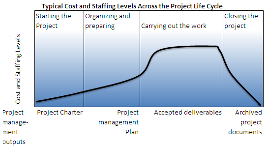
[Fig. 2-1 / 16]
-
Generic Lifecycle
Characteristics
-
Cost and staffing
levels – Graph: starts low, highest during work, drop rapidly at
closing
-
Stakeholder Risk,
Influence, Uncertainty highest at start and drop throughout project
life cycle
-
Influence over Product
with minimum impact I highest at start
-
Cost of change
increases as project progresses
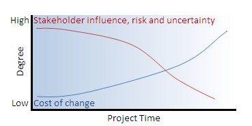
[Fig 2-2 / 17]
-
For more control project
may be divided into phases
2.1.2 Product vs. PLC
Relationships
-
Project may have a
service or warranty period after deliverable, this is still part of
the project Not operations
-
New Product development,
Upgrades, Enhancements or Studies are considered Projects
-
Product may have many
Projects, managing these projects collectively may be beneficial
2.1.3 Project Phases
-
Phase breakdown can help
control project
-
Phase can be sequential
or overlapping
-
Control level depends on
phase size, complexity, potential project impact
-
Phases have can have
similar characteristics
-
Sequential Phases
-
Close with
handoff/transfer of work/product reassess effort, change or
terminate project
-
Work has distinct
focus, different from other phases, can differ in organization and
skills
-
Primary deliverable of
phase requires extra control
-
Repeating of processes
across 5 Process Groups provides additional control and defines
phase boundaries
[Fig 2-3 / 19]
-
Every project is
different
-
Utilizes:
-
Industry common
practices
-
Organizational
established processes
-
Varies with Organization
and Project teams
.1 Project Governance
Across Project Life Cycle
-
Provides constant
comprehensive method of project control
-
Described in Project
Management Plan
-
Fits within larger
context of Program/Organization
-
Additional constraint to
Time and Budget
-
Close of phase
-
Analyze - Should
project continue
-
Detect and correct
errors
.2 Phase to Phase
Relationships
-
Sequential
-
Reduces uncertainty but
limits options to reduce schedule
-
Overlapping
-
Schedule compression
possible
-
Increases Risk and
possibility of rework
-
Iterative
-
Only one phase planned
at a time
-
Used in changing
environments
-
Reduces ability for
long term planning
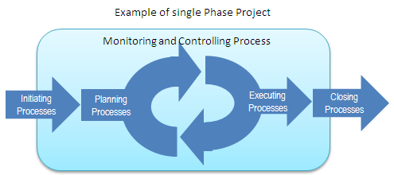
[Fig 2-5 / 21]
2.2 Project vs.
Operational Work
-
Shared characteristics
-
Performed by
individuals
-
Limited by constraints
-
Planned, Executed,
Monitored and Controlled
-
Differences
-
Operational – ongoing
and repetitive
-
Project – Temporary
has beginning and end
-
Projects that modify or
contribute to existing operations can included but are not limited
to:
-
Develop new product or
service
-
Install
product/services that require ongoing support
-
Internal projects that
affect structure, staffing levels or culture of organization
-
Developing, acquiring
and enhancing an operational departments information systems
2.3 Stakeholders
-
Persons or Organizations
-
Internal and External
-
Can have Negative or
Positive Influence
-
Expert Influence on
Project
-
Project Manager must
manage stakeholders for success of project
[Fig 2-6 / 24]
-
Stakeholders Influence
can vary throughout the Project Life Cycle
-
Project Manger must
identify and influence stakeholders
-
Project can have
positive or negative influence on Stakeholders, a Project Manager
must manage expectations and influence Stakeholders
-
Customers/Users
-
Sponsors
-
Financial resources,
champion project, high influence on Project Charter/Vision
-
Portfolio Manger(s) /
Review board
-
High level governance
-
Review project Return
on Investment (ROI) and Risks
-
Provide Support and
Guidance
-
Ensure benefits of
related projects
-
Project Management
Office
-
Provide support
-
Can direct projects
-
Can be direct
Stakeholders
-
Provide:
-
Administrative support
– policies, templates…
-
Training, Mentoring,
Coaching
-
Support, Guidance,
Management Training
-
Tools – software
-
Resource Alignment
-
Centralize
communication for all parties
-
Project Managers
-
Develop Project
Management Plan and component plans
-
Keep Project on track –
budget, time…
-
Identify, Monitor,
Respond to Risks
-
Produce Accurate and
Timely Reports
-
Includes all team
members including project manager
-
Functional Managers
-
May provide
-
Financing
-
Human Resources
-
Accounting
-
Procurement
-
Subject Mater Experts
(SME)
-
Operations Management
-
Directly in control of
Product/Services
-
Responsible to
Incorporate Project deliverables
-
Sellers/Business
Partners
-
Vendors, Suppliers,
Contractors
-
External organizations
with contractual obligations
-
Provide expertise and
support as well as special products
2.4 Organizational
Influence on Project Management
-
Culture, Style and
Structure
2.4.1 Organizational
Cultures and Styles
-
Shared Visions, Values
Norms, Beliefs and Expectations
-
Policies, Methods and
Procedures
-
View of Authority
Relationships
-
Work Ethics and Hours
2.4.2 Organization
Structure
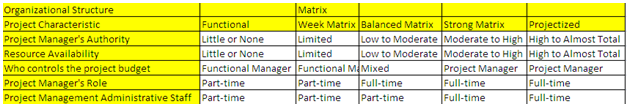
[Table 2-1 / 28]
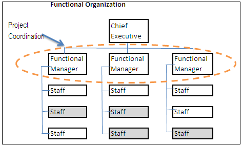
[Fig. 2-7 / 29 ]
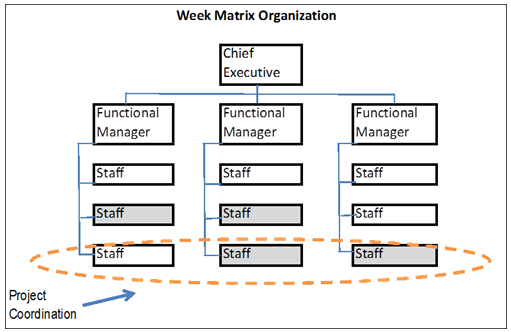
[Fig.
2-8 / 29]
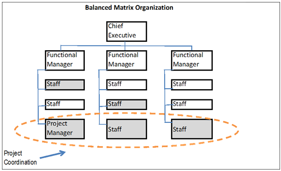
[Fig. 2-9/ 30]
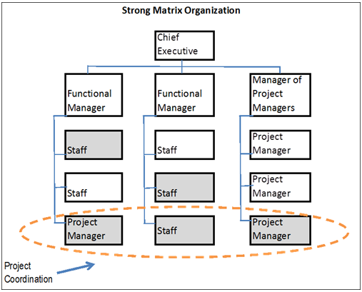
[Fig. 2-10 / 30]
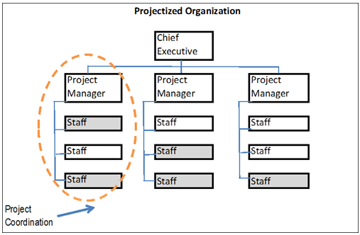
[Fig. 2-11 / 31]
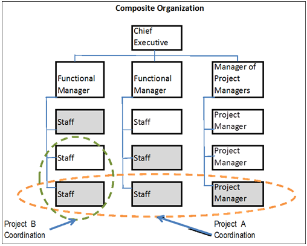
[Fig. 2-12 / 31]
2.4.3 Organizational
Process Assets
.1 Processes and
Procedures
-
Operational processes
and standards, policies, guidelines, work, proposal evaluation,
performance measurements
-
Templates – WBS,
Project Schedule, Contract Templates..
-
Guidelines for
tailoring standards processes to satisfy project needs
-
Communication
Requirements
-
Project Closure
Guidelines
-
Project Closure
Guidelines (Audits and Evaluations)
-
Financial Controls
and Procedures (Reporting, contracts…)
-
Issues and Defect
management
-
Change Control
procedures
-
Risk Control
procedures
-
Procedures for
Prioritizing, Approving and Work Authorization
.2 Corporate Knowledge
Base
-
Process Measurement
Database (Processes and products)
-
Project Files (Scope,
Cost, Schedules and Quality…)
-
Historical Information,
Lessons Learned
-
Issues and Defects
database
-
Configuration Management
(Baseline for Organizational Standards)
-
Financial Database (HR,
Costs, Budgets…)
3. PM Process for a Project
-
A process is a set of
interrelated actions and activities performed to achieve a
pre-specified product, results or service
-
Process characteristics
– Inputs, Tools and Techniques, Outputs
-
For a successful project
a team must:
-
Select process to meet
objective
-
Use defined approach to
meet requirements
-
Comply with
requirements to meet stakeholders' needs and expectations
-
Balance scope, time,
cost, quality, resources and risk to produce product/service/result
-
Two Categories of
Project Process
-
Project Management –
application of Project Management knowledge and tools
-
Product Oriented
Process – knowledge of product defines project
-
Project Management
Process Groups
-
Initiating Processes
Group – start, obtain authorization
-
Planning Process Group
– establish scope, refine objectives, define course of action
-
Executing Process Group
– work defined by Project Management Plan
-
Closing Process Group –
finalize activities and close project
3.1 Common Project
Management Process Interactions
-
Elements of a project
Overlap, repetitive, iterative
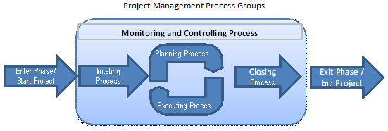
[Fig 3-1 / 40]
-
Process Groups are lined
by their outputs and often overlap

[Fig 3-2 / 41]
3.2 Project Management
Process Groups
-
Characteristics
-
Clear Dependencies
-
Typically Performed in
same sequence
-
Independent of
application or industry
-
Repetitive in
multi-phase projects
-
Interaction and Order
may vary project by project
-
Process groups are Not
Project Phases
-
-
Process Groups are made
up of 42 Project processes
[Fig 3-3 / 42]
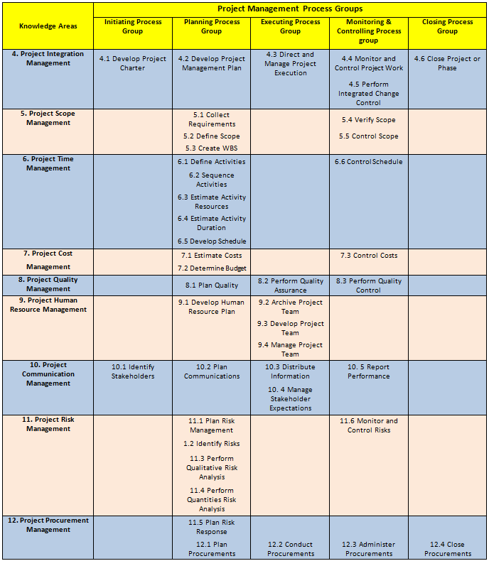
[Table 3-1 / 43]
3.3 Initiating Process
Group
-
Define new Project/Phase
by obtaining authorization
-
Initial scope defined
-
Initial Financial
resources committed
-
Project Charter created
-
Internal and External
Stakeholders defined
-
Project Manager selected
-
Success Criteria
verified at start of each phase (if multi-phase)
-
Project continuation,
delay, or discontinued to be verified at start of each phase
-
Involving customers
and/or stakeholder increases success of project
[Fig 3-4 / 44]
-
Initiating process can
start via organizational, portfolio or program process external to
project control and scope
-
Clear Project objects
are set
[Fig 3-5 / 45]
3.3.1 Developing Project
Charter
-
Formally authorizes
project
-
Document initial
requirements of stakeholders' needs and expectations
-
Validate and refine
during previous iterations of project charter development
[Fig 3-6 / 46]
3.3.2 Identify
Stakeholders
-
Document and Identify
all individuals and organizations with influence over the project,
or that are influenced by the project outcome
[ Fig 3-7 / 46]
3.4 Planning Process
Group
-
Establish total scope of
effort
-
Define/Refine objectives
-
Develop course of action
-
Develop Project
Management Plan
-
Additional information
may initiate changes and refine plans, this is an iterative approach
know as Rolling
Wave Planning
[Fig 3-8 / 47]
-
Planning process
examines:
-
Scope
-
Time
-
Cost
-
Quality
-
Communication
-
Risk
-
Procurement
-
Planning process defines
-
Schedule
-
Costs
-
Resource Requirements
-
Encourage involvement
from all stakeholders
-
Establish project
Boundaries, Monitoring and Controlling activities
3.4.1 Develop Project
Management Plan
-
Document actions to
define, prepare, integrate and coordinate all subsidiary plans
[Fig 3-9 / 48]
3.4.2 Collect
Requirements
-
Defining and documenting
stakeholders' needs and Project objectives
[Fig 3-10 / 49]
3.4.3 Define Scope
-
Detailed description of
Project and Product3
[Fig 3-11 / 49]
3.4.4 Create Work
Breakdown Structure (WBS)
-
Subdividing project
deliverables and project work into smaller and more manageable
components
[Fig 3-12 / 49]
3.4.5 Define Activities
-
Define specific actions
to be performed
[Fig 3-13 / 50]
3.4.6 Sequence Activities
-
Identify and document
relationship of Project activities
[Fig 3-14 / 50]
3.4.7 Estimate Activity
Resources
-
Type and quantities of
material
-
People, equipment
/supplies required for each activity
-
Activity List
-
Activity Attributes
-
Resource calendar
-
Enterprise Environmental
Factors
-
Organizational Process
Assets
-
Outputs
-
Activity Resource
Requirements
-
Resource Breakdown
Structure
-
Project Document
Structure
3.4.8 Estimate Activity
Durations
-
Approximating the number
of Work Periods needed to complete individual activities with
estimated resources
-
Activity List
-
Activity Attributes
-
Resource calendar
-
Activity Resource
Requirements
-
Project Scope Statement
-
Enterprise Environmental
Factors
-
Organizational Process
Assets
-
Output
-
Activity Duration
estimate
-
Project Document Updates
[Fig 3-16 / 51]
3.4.9 Develop Schedule
-
Analyze activity
sequences, durations, resource requirements and schedule constraints
to develop a project schedule
[Fig 3-17 / 51]
3.4.10 Estimate Costs
-
Develop and
Approximation of Monterey Resources
-
Inputs
-
Scope Baseline
-
Project Schedule
-
Human Resource Plan
-
Risk Register
-
Enterprise
Environmental Factors
-
Organizational Process
Assets
-
Outputs
-
Activity Cost Estimates
-
Basis of Estimate
-
Project Document
Updates
[Fig 3-18 / 52]
3.4.11 Determine Budget
-
Aggregating cost of
individual activities/work packages to establish cost baseline
[Fig 3-19 / 52]
3.4.12 Plan Quality
-
Identify Quality
Requirements / Standards for Project/Product and document how
project will comply
[Fig 3-20 / 52]
3.4.12 Develop Human
Resource Plan
-
Identify and document
Project Roles, Responsibilities, Required Skills, Reporting
Relationships and create staffing management plan.
[Fig 3-21 / 53]
3.4.14 Plan
Communications
-
Determine Stakeholder
information needs and define communication approach
[Fig 3-22 / 53]
3.4.15 Plan Risk
Management
-
Define how to conduct
risk management activities for project
[Fig 3-23 / 53]
3.4.16 Identify Risk
-
Determine Risks that may
affect Project and document their characteristics
[Fig 3-24 / 54]
3.4.17 Perform
Qualitative Risk Analysis
-
Prioritize Risks by
assessing and combining probability of occurrence and impact
[Fig 3-25 / 54]
3.4.18 Perform
Quantitative Risk Analysis
-
Numerically Analyzing
affect of risks on overall project objectives
[Fig 3-26 / 54]
3.4.19 Plan Risk
Responses
-
Options and Actions to
Enhance Opportunities and reduce threats
[Fig 3-27 / 55]
3.4.20 Plan Procurements
-
Document Project
Purchasing decision
[Fig 3-28 / 55]
3.5 Executing Process
Group
[Fig 3-29 / 56]
-
Plan updates
-
Re-base lining
-
Changes in Schedule /
Resources
-
Dealing with Unexpected
Risks
-
Trigger Change Requests
-
Includes following
Project Management Processes:
3.5.1 Direct and Manage
Project Execution
-
Perform work as defined
in Project Management Plan
[Fig 3-30 / 57]
3.5.2 Perform Quality
Assurance
-
Auditing Quality
Requirements and results from Quality Assurance Measurements
[Fig 3-31 / 57]
3.5.3 Acquire Project
Team
-
Confirm HR availability
and obtain team
[Fig 3-32 / 57]
3.5.4 Develop Project
Team
-
Improving Competencies,
Team Interaction, and Team Environment to enhance project
performance
[Fig 3-33 / 58]
3.5.5 Manage Project Team
-
Tracking performance,
providing feedback, resolving issues and mange change
[Fig. 3-34 / 58]
3.5.6 Distribute
Information
-
Inform Stakeholders as
planned
[Fig. 3-35 / 58]
3.5.7 Manage Stakeholder
Expectations
-
Communicate and work
with stakeholders to meet needs and resolve issues
[Fig 3-36 / 59]
3.5.8 Conduct Procurement
-
Obtain response, select
seller, award contracts
[Fig 3-37 / 59]
3.6 Monitoring and
Controlling Process Group
-
Track, Review and
Regulate project performance
-
Identify and initiate
changes
-
Measure regularly and
consistently to identify variances
-
Control changes,
recommend preventative action
-
Monitor activities
against Project Management pland and Baseline
-
Control influencing
factors that could circumvent changes so only approved changes are
implemented
-
Take corrective action
-
Review at end of each
phase
[Fig 3-38 / 60]
3.6.1 Monitor and Control
Project Work
-
Tracking, Reviewing and
Regulating progress according to Project Management plan
-
Status reporting,
Progress measurement forecasting, Performance reports
[Fig 3-39 / 61]
3.6.2 Perform Integrated
Change Control
-
Review and approve
changes
[Fig 3-40 / 61]
3.6.3 Verify Scope
-
Formalizing acceptance
of deliverables
[Fig 3-41 / 61]
3.6.4 Control Scope
-
Monitor project and
product scope
-
Manage changes to
Baseline
[Fig 3-42 / 62]
3.6.5 Control Schedule
-
Monitor and update
progress
-
Manage Schedule Baseline
[Fig 3-43 / 62]
3.6.6 Control Costs
-
Monitor and update cost
baselines
[Fig 3-44 / 62]
3.6.7 Perform Quality
Control
-
Monitor and report
results of activities to assess performance and recommend changes
[Fig 3-45 / 62]
3.6.8 Report Performance
-
Collect and distribute
status reports
-
Progress measurement and
forecasts
[Fig 3-46 / 63]
3.6.9 Monitor and Control
Risks
-
Implement Risk Response
Plan
-
Track identified risks
-
Monitor residual risks
-
Identify new risks
-
Evaluate risk process
effectiveness
[Fig 3-47 / 63]
3.6.10 Administer
procurements
-
Manage procurement
relationships
-
Monitor contract
performance
[Fig 3-48 / 65]
3.7 Closing Process Group
-
Obtain acceptance by
Customer/Sponsor
-
Conduct Post – Project
/ Phase End review
-
Record impacts of
tailoring to any process
-
Lessons learned
-
Updates to
Organizational Process Assets
-
Archive Project
Documents
-
Close out Procurements
[Fig 3-49 / 65]
3.7.1 Close Project or
Phase
-
Finalize activities and
complete project/phase
[Fig 3-50 / 65]
3.7.2 Close Procurements
-
Complete project
procurements
[Fig 3-51 / 65]
4 Project Integration Management
4.1 Develop Project
Charter
4.2 Develop Project
Management Plan
4.3 Direct and Manage
Project Execution
4.4 Monitor and Control
Project Work
4.5 Perform Integrated
Change Control
4.6 Close Project or
Phase
-
Develop Project Charter
-
Develop Project
Management plan
-
Direct and Manage
Project execution
-
Monitor and Control
project work
-
Perform Integrated
Change Control
-
Close Project/Phase
-
Required when individual
processes interact
-
i.e. Cost estimate -
Contingency plan – Risk Knowledge
-
All management processes
should be reviewed to determine if required
-
Sample Activities
-
Analyze and understand
scope, requirements, criteria assumptions, constraints and other
influences
-
Turn information into
Project Management plan
-
Activities to produce
project deliverables
-
Measure and Monitor
[Fig 4-1 / 73]
4.1 Develop Project
Charter
-
Formal Authorization for
resources and activities
-
Stakeholder needs and
expectations
-
Partnership amongst
organizations
-
Assessing Project
Managers – preferably prior/during charter creation
-
Authorization external
to project
-
Sponsors
-
Project Management
Office (Project Management Office)
-
Portfolio steering
committee
[Fig 4-2 / 74]
[Fig 4-3 / 74]
4.1.1 Develop Project
Charter Inputs
.1 Statement of Work
(SOW)
-
SOW References
-
Business needs - Market
demand, Technological advance, Legal requirements, Government
regulations
-
Product Scope
Description – relationship of product/service produced
-
Strategic Plan
.2 Business Case
-
Justifies Project
-
Cost-Benefit analysis
-
Results of:
-
Market demand
-
Organizational need
-
Customer request
-
Technical advance
-
Legal requirements
-
Ecological impact
-
Social need
.3 Contract (with
External Customers)
.4 Enterprise
Environmental Factors
-
Government / Industry
standards
-
Organization
infrastructure
-
Market place conditions
.5 Organizational Process
Assets
-
Organizational standard
processes and policies
-
Templates
-
Historical Information /
Lessons learned
4.1.2 Develop Project
Charter – Tools and Techniques
.1 Expert Judgment
-
Other units in
organization
-
Consultants
-
Stakeholders –
customers and sponsors
-
Professional / Technical
associations
-
Industry groups
-
Subject Mater Experts
(SMEs)
-
Project Management
Office (Project Management Office)
4.1.3 Develop Project
Charter – Outputs
.1 Project Charter
-
Project purpose or
justification
-
Measurable project
objectives, success criteria
-
High Level Requirements
-
High Level Project
description
-
High Level Risks
-
Summary Milestone
schedule
-
Project Approval
requirements
-
Assigned Project Manager
– responsibility and authority
-
Name and authority of
Sponsor / Authorizing person(s)
4.2 Develop Project
Management Plan
-
Coordination and
Integrations of subsidiary plans
-
Updated and approved via
Perform integrated change control
[Fig 4-4 / 78]
[Fig 4-5 / 78]
4.2.1 Develop Project
Management Plan – Inputs
.1 Project Charter
(4.1.3.1)
.2 Outputs from Planning
process
.3 Enterprise
Environmental Factors
-
Influence the Project
Management Plan
-
Government / Industry
Standards
-
Project Management
Information System
-
Organizational Structure
and Culture
-
Infrastructure
-
Personnel Administration
.4 Organizational Process
Assets
-
Standardized guidelines,
work instructions, proposal evaluation criteria, performance
measurement
-
Project Management Plan
Templates
-
Guidelines for
tailoring standards
-
Project closure
guidelines
-
Change control
procedures
-
Project files for past
projects
-
Historical information
-
Configuration management
Knowledge base – baselines, company standards
4.2.2 Develop Project
Management Plan – Tools & Techniques
.1 Expert Judgment
-
Tailor process for
project
-
Develop technology and
management processes selected by project management team
-
Determine resources and
skills
-
Define configuration
management
-
Determine project
documents to go through change control
4.2.3 Develop Project
Management Plan – Outputs
.1 Project Management
Plan
-
Consolidates all
subsidiary management plans
-
Life cycle for Project
applied at each Phase
-
Tailoring by Project
management team
-
Project Management
process selected
-
Level of implementation
of each process
-
Description of Tools &
Techniques
-
How selected process
will be sued – dependencies, interactions, inputs and outputs
-
Change Management Plan –
monitoring and controlling
-
Configuration Management
plan
-
Integrity and
Performance Baseline maintenance
-
Communication amongst
Stakeholders
-
Management Review –
content, extent, timing for issues and decisions
-
Project Baseline
-
Schedule
-
Cost performance
-
Scope
-
Subsidiary Plans
-
Scope management
-
Requirements management
-
Schedule management
-
Cost management
-
Quality management
-
Process improvement
-
Human Resource
management
-
Communications
management
-
Risk management
-
Procurement management
4.3 Direct and Manage
Project Execution
-
Objectives:
-
Accomplish Project
Requirements
-
Create project
deliverables
-
Staff, Train and Manage
project members
-
Obtain, Manage, use –
resources, materials, tools, equipment and facilities
-
Implement planned
methods and standards
-
Establish
communications – internal and external
-
Project data – cost,
schedule, quality, forecasting
-
Change requests –issue,
approve and integrate
-
Risk – manage and
respond
-
Manage sellers and
supplier
-
Document Lessons
Learned – improve processes
-
Implementation of
Approved Changes
-
Corrective Action
– bring expected future performance in line with Project
Management plan
-
Preventative Action
– reduce negative consequences associated with project risks
-
Defect Repair
– document identification of project components for repair or
replacement
[Fig
4-6 / 84]
[Fig
4-7 / 84]
4.3.1
Direct and Manage Project Execution – Inputs
.1
Project Management Plan
.2
Approved Change Requests
-
Approved
changes can influence – policies, Project Management Plan,
procedures, cost, budget, schedule
.3 Enterprise
Environmental Factors
-
Organization, Company or
Customer culture or structure
-
Infrastructure
-
Personnel Administration
-
Stakeholder Risk
Tolerance
-
Project Management
Information System
.4 Organizational Process
Assets
-
Guidelines and Work
instructions
-
Communications
requirements
-
Issue / Defect
management procedures
-
Process measurement
database
-
Project files from prior
projects
-
Issues / Defect database
4.3.2 Direct and Manage
Project Execution – Tools & Techniques
.1 Expert Judgment
-
Other units in
organization
-
Consultants
-
Stakeholders
-
Professional and
Technical Associations
.2 Project Management
Information Systems
-
Part of Enterprise
Environmental Factors
-
Automated tools
.4.3.3 Direct and Manage
Project Execution – Outputs
.1 Deliverables
-
Unique verifiable
product or service result
.2 Work Performance
Information
-
Deliverable status
-
Schedule progress
-
Costs incurred
.3 Change Requests
-
Can modify – policies,
scope, cost, budget, schedule, quality
-
Can be Internal or
External
-
Corrective action
-
Preventative action
-
Defect repair
-
Updates
.4 Project Management
Plan Updates
-
Requirements Management
Plan
-
Schedule Management Plan
-
Cost Management Plan
-
Quality Management Plan
-
Human Resource Plan
-
Communication
-
Risk Management Plan
-
Procurement Management
Plan
-
Project Baselines
.5 Project Document
Updates
-
Requirements documents
-
Project Logs
-
Risk Register
-
Stakeholder Register
4.4 Monitor and Control
Project Work
-
Collecting, Measuring
and Distributing Performance Information
-
Continuous monitoring
gives insight to health of project
-
Compare actual
performance against project management plan
-
Assess performance and
take corrective actions
-
Analyzing, Tracking and
monitoring project risk
-
Timely information on
project products and associated documents
-
Provide information to
support status reporting and measurements
-
Forecasts on Schedule
and Costs
-
Monitor Implementation
of changes
[Fig 4-8 / 89]
[Fig 4-9 / 90]
4.4.1 Monitor and Control
Project Work – Inputs
.1 Project Management
plan
.2 Performance Reports
-
Milestones and
accomplishments
-
Current status
-
Significant
accomplishments for period
-
Schedule activities
-
Forecasts
-
Issues
.3 Enterprise
Environmental Factors
-
Government/Industry
standards
-
Company work
authorization system
-
Stakeholder Risk
tolerance
-
Project Management
Information Systems
.4 Organizational Process
Assets
-
Organization's
Communication requirements
-
Financial controls
-
Issue and Defect
procedures
-
Risk Control procedures
-
Process measurement
database
-
Lessons Learned
4.4.2 Monitor and Control
Project Work – Tools and Techniques
.1 Expert Judgment
-
Project Management Team
interprets and acts on information
4.4.3 Monitor and Control
Project Work – Outputs
.1 Change Requests
-
Planned vs. Actual
results
-
Can impact Project
Management Plan, documentation, results
-
Corrective action –
work in line with Project Management Plan
-
Preventative action –
reduce risk of occurrence
-
Defect repair –
replacement or repair of defective component
.2 Project Management
Plan Updates
-
Schedule Management Plan
-
Cost Management Plan
-
Quality Management Plan
-
Scope Baseline
-
Schedule Baseline
-
Cost Performance
Baseline
.3 Project Document
Updates
-
Forecasts
-
Performance reports
-
Issue Log
4.5 Perform Integrated
Change Control
-
Review, approve and
manage changes
-
Approved changes
incorporated into baseline
-
Change control influence
factors:
-
Influencing the factors
that circumvent integrated change control process
-
Prompt review,
analysis, approval of changes – slow decisions can be costly
-
Manage Approved changes
-
Manage integrity of
baseline – ensure only approved changes are recorded in Project
Management Plan
-
Review Approve/Deny
corrective or preventative actions
-
Coordinate changes
across entire project
-
Document impact of
change requests
-
Change Request should
always be in writing and may need a Time/Cost impact analysis
-
Request approval require
authority of Project Manager or Change Control Board (CCB) – may
have multi-tiered board structure
-
Approved Change Requests
can influence:
-
Cost Estimates
-
Activity Sequences
-
Schedule Dates
-
Resource Requirements
-
Risk Response
Alternatives
-
Configuration Control
Management focuses on deliverables and process, while Change Control
is about managing Change Requests
-
Establishes and
evolutionary method of constantly identifying Change Requests,
establish baselines, asses value of changes
-
Provide opportunity to
constantly validate and improve impact of changes
-
Provides Mechanism for
Project Management Team to consistently communicate changes
-
Configuration Management
Activities
-
Configuration
Identification
-
Configuration Status
Accounting
-
Configuration
Verification and Audit
[Fig 4-10 / 95]
[Fig 4-11 / 96]
4.5.1 Perform Integrated
Change Control – Inputs
.1 Project Management
Plan
.2 Work Performance
Information
.3 Change Requests
-
Performance against
baseline
.4 Enterprise
Environmental Factors
-
Project Management
Information System
.5 Organizational Process
Assets
-
Change Control
Procedures
-
Procedures for Approving
changes
-
Process Measurement
Database
-
Project Files
-
Configuration Management
Database
4.5.2 Perform Integrated
Change Control – Tools and Techniques
.1 Expert Judgment
-
Consultants
-
Stakeholders
-
Professional and
Technical associations
-
Industry groups
-
Subject Mater Experts
-
Project Management
Office
.2 Change Control
Meetings
4.5.3 Perform Integrated
Change Control – Outputs
.1 Change Requests
Updates
.2 Project Management
Plan Updates
.3 Project Document
Updates
4.6 Close Project or
Phase
-
Actions and activities
necessary to satisfy completion
-
Actions and activities
to handover results/services/ products to operations
-
Activities to Collect
Records, Audit success or failure Lessons Learned and Archive
Documents
[Fig 4-12 / 100]
[Fig 4-13 / 100]
4.6.1 Close Project/Phase
– Inputs
.1 Project Management
Plan
.2 Accepted Deliverables
.3 Organizational Process
Assets
-
Closure Guidelines
-
Historical Database
4.6.2 Close Project/Phase
– Tools and Techniques
.1 Expert Judgment
4.6.3 Close Project/Phase
– Outputs
.1 Final Product, Service
or Result Transition
.2 Organizational Process
Assets Updates
-
Project Files
-
Project/phase closure
documents – contracts, sign-off documents
-
Historical Information
5. Project Scope Management
-
Ensure all required work
is completed successfully
5.1 Collect Requirements
5.2 Define Scope
5.3 Create WBS
5.4 Verify Scope
5.5 Control Scope
-
Product Scope
-
Feature and
characteristics of Product/Service/Result
-
Project Scope
-
Work to be performed
for successful completion
-
Project Management Plan
and Scope Management Plan control how scope will be defined,
verified and managed
[Fig 5-1 / 104]
-
Completion of Project
Scope is
measured against Project Management Plan
-
Completion of Product
Scope
is measured against Product Requirements
5.1 Collect Requirements
-
Documenting needs and
expectations of Stakeholders
-
Must have enough details
to be measured during project
-
Define Project and
Product requirements
-
Foundation of WBS, Cost,
Schedule and Quality
-
Product and Project
requirements can be separate
[Fig 5-2 / 105]
[Fig 5-3 / 106]
5.1.1 Collect
Requirements – Inputs
.1 Project Charter
-
High level Project
requirements and Product definition
.2 Stakeholder Register
5.1.1 Collect
Requirements – Tools and Techniques
.1 Interviews
-
Stakeholders, SME's
experienced project participants
.2 Focus Groups
-
Use of trained moderator
to lead process
.3 Facilities Workshops
-
JAD - Joint Application
Development sessions
-
QFD - Quality Function
Deployment
-
VOC - Voice of Customer
.4 Group Creativity
Techniques
-
Brainstorming
-
Normal Group Techniques
– enhances brainstorming by voting of ideas to keep using
-
Delphi Technique –
expert opinion / contribution
-
Idea / Mind Mapping –
map brainstorming ideas
-
Affinity Diagram –
group and sort large amount of ideas
.5 Group Decision Making
Ideas
-
Unanimity
-
Majority
-
Plurality
-
Dictatorship
.6 Questions and Surveys
-
Used for broad audience
and quick turnaround
.7 Observations
-
Job shadowing
-
Assists when
participants cannot describe process fully
.8 Prototypes
-
Allows early feedback
through interaction with stakeholders
5.1.1 Collect
Requirements – Outputs
.1 Requirements
Documentation
-
Requirements must be
unambiguous, measurable, testable, traceable, complete, consistent
and acceptable to key stakeholders
-
Start at high level and
get more detailed
-
Components of
Requirement:
-
Business need or
opportunity
-
Business and project
objectives for traceability
-
Functional requirements
– business process interaction with product
-
Non-functional
requirements – ie. Level of service performance expectations,
compliance
-
Quality Requirements
-
Acceptance Criteria
-
Business Rules –
principles of organization
-
Impact to other
organizational areas
-
Impact to other
entities
-
Support and training
requirements
-
Assumptions and
constraints
.2 Requirements
Management Plan
-
How requirements
activities will be planned, tracked and reported
-
Configuration Management
Activities – how changes to product/service/result to approve
changes
-
Requirements
prioritization process
-
Product metrics –
rationale for using them
-
Tractability structure –
other documents to trace
.3 Requirements
Tractability Matrix
-
Links requirements to
origins and traces through project life cycle
-
Requirement to Business
needs, objectives and opportunities
-
Requirement to Project
objectives
-
Requirement to Project
scope / WBS deliverables
-
Requirement to Product
deliverable
-
Requirement to Test
strategy
-
High level to detailed
requirements
5.2 Define Scope
-
Detailed description of
project and product
-
Progressive elaboration
[Fig 5-4 / 112]
5.2.1 Define Scope –
Inputs
.1 Project Charter
.2 Requirements Documents
[Fig 5-5 / 113]
.3 Organizational Process
Assets
-
Policies, procedures and
templates for scope
-
Project files –
previous projects
-
Lessons Learned
5.2.2 Define Scope –
Tools and Techniques
.1 Project Scope
Statement
-
Describes in detailed
work and deliverables
-
Provides Common
understanding
-
Baseline for Change
Requests evaluations
-
Includes / References:
-
Product Scope
Definition – detailed product description
-
Product Acceptance
Criteria – process for acceptance
-
Project Deliverables –
end result and documents
-
Project Exclusions –
identifies what is out of scope
-
Project Constraints –
ie. Time and Budget
-
Project Assumptions –
assumptions and impact if they are false
.2 Project Document
Updates
-
Stakeholders register
-
Requirements documents
-
Requirements
tractability metrics
5.3 Create WBS
-
Subdividing project
deliverables into smaller manageable components
-
Deliverables –
oriented hierarchical decomposition of the work
-
WBS organizes and
defines total scope of project
-
Lowest level of WBS
components called Work Packages
-
Work Package can be
scheduled, cost estimated, monitored and controlled
-
Work refers to
deliverables / result – Not the effort
[Fig 5-6 / 116]
[Fig 5-7 / 117]
5.3.1 Create WBS –
Inputs
.1 Project Scope
Statement
.2 Requirements Documents
.3 Organizational Process
Assets
-
Policies and procedures
-
Project files from
previous projects
-
Lessons Learned
5.3.2 Create WBS –
Tools and Techniques
.1 Decomposition
-
Subdivision or Project
deliverables to Work package levels - will vary with project
complexity and size
-
Activities:
-
Identifying and
analyzing deliverables and related work
-
Structuring and
organizing WBS
-
Decomposing upper WBS
levels into lower level detailed components
-
Developing and
assessing Identification Codes to WBS components
-
Verifying that the
degree of decomposition of work is necessary and sufficient
-
WBS Forms:
-
Using phases as 1st
level with product/project deliverables at 2nd
level (see fig 5-9)
-
Major deliverables as
1st
level (see fig. 5-10)
-
Using subprojects,
developed by outside organizations utilizing contract work,
breakdown WBS as part of contracted work
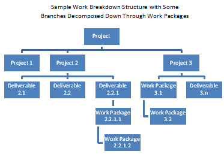
[Fig 5-8 / 119]
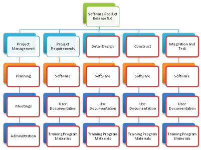
[Fig 5-9 / 119]

[Fig 5-10 / 119]
[Fig 5-11 / 120]
-
WBS can be Outline,
Organizational chart, Fishbone diagram or other
-
Different deliverables
have different breakdown levels
-
Greater levels enhance
plan, control , management of project – too much can be
inefficient and non-productive
-
Not possible to create
WBS for far future – phase/project deliverable must be defined,
referred to as Roll
Wave Planning
-
Lower levels must Roll
into Higher levels
5.3.3 Create WBS –
Outputs
1. WBS
-
WBS deliverable –
oriented hierarchical decomposition of work
-
WBS finalized by
establishing control accounts for work packages with unique
identifier form code of accounts
-
Control Accounts is a
Management Control Point where scope, cost and schedule are
integrated and compared to the Earned
Value
of performance measurement
-
Control Account may have
many work packages but a Work Package can have only one control
account
.2 WBS Dictionary
-
Detailed description of
WBS components
-
Includes:
-
Code Account identifier
-
Description of Work
-
Responsible
Organization
-
List of Schedule
Milestones
-
Associated Schedule
activities
-
Resources Required
-
Cost Estimates
-
Quality Requirements
-
Accepted Criteria
-
Technical Reference
-
Contract Information
.3 Scope Baseline
-
Component of Project
Management Plan
-
Includes:
-
Project Scope Statement
-
WBS
-
WBS Dictionary
.4 Project Document
Updates
-
Requirements document
-
Change requests approved
form WBS must update requirement documents
5.4 Verify Scope
-
Formalizing acceptance
of deliverable(s) – Primary Goal
-
Review with
Customer/Sponsor for satisfaction
-
Different from Quality
control but can be done in parallel
[Fig 5-11 /123]
[Fig 5-12 / 123]
5.4.1 Verify Scope –
Inputs
.1 Project Management
Plan
-
Contains scope baseline
which includes:
-
Project Scope Statement
-
WBS
-
WBS Dictionary
.2 Requirements Document
-
Includes Project,
Product, Technical and other details and Acceptance criteria
.3 Requirements
Tractability Matrix
-
Links Requirements to
origins and tracks through Project Life Cycle
.4 Validate Deliverables
-
Verify completeness
check quality through Quality Assurance process
5.4.2 Verify Scope –
Tools and Techniques
.1 Inspection
-
Measuring, examining and
verifying that deliverables meet requirements and acceptance
criteria
-
Reviews, Audits and
Walkthroughs
5.4.3 Verify Scope –
Outputs
.1 Accepted Deliverables
-
Formal documentation on
delivery from sponsor
-
Move to close
project/phase
.2 Change Requests
-
Completed but Not
accepted deliverables documented, may require Change Request for
Repair
-
Change Requests
processed for review and disposition through Perform Integrated
Change Control
.3 Project Document
Updates
-
Documents updated
through Verify Scope Process
5.5 Control Scope
-
Monitoring status of
project and product scope
-
Manage changes to Scope
Baseline
-
Controls changes through
Integrated Change Control
-
Uncontrolled changed are
referred to as Scope Creep
[Fig 5-13 / 125]
[Fig 5-14 / 126]
5.5.1 Control Scope –
Inputs
.1 Project Management
Plan
-
Scope baseline
-
Scope management plan
-
Change management plan
-
Configuration management
plan – defines items that are configurable and may require change
-
Requirement management
plan – how requirements are planned and changes processed
.2 Work Performance
Information
-
Deliverables Status
-
Start
-
In-progress
-
Finished
.3 Requirements
Documentation
.4 Requirements
Traceability Matrix
.5 Organizational Process
Assets
-
Scope control polices
and guidelines
-
Monitoring and reporting
methods
5.5.2 Control Scope –
Tools and Techniques
.1 Variance Analysis
-
Determine Cause and
Degree of variance relative to Scope Baseline and decide if
corrective or preventative action required
5.5.3 Control Scope –
Outputs
.1 Work Performance
Measurements
-
Actual Technical or
Scope performance measurement
-
Reported to Stakeholders
.2 Organizational Process
Assets Updates
-
Cause of Variance
-
Corrective action chosen
and reason
-
Lessons Learned
.3 Change Requests
-
Preventative, Corrective
or Defect repair
-
Measured against Scope
baseline
-
Processed for review
according to Integrated Change Control
.4 Project Management
Plan Updates
-
Scope baseline updates
-
Other baseline updates –
cost, time…
.5 Project Document
Updates
-
Requirements
documentation
-
Requirements
Traceability Matrix
6. Project Time Management
6.1 Define Activities
6.2 Sequence Activities
6.3 Estimate Activity
Resources
6.4 Estimate Activity
Duration
6.5 Develop Schedule
6.6 Control Schedule
-
Although some
differentiate between Schedule and Schedule Model where the schedule
model is the data and calculations that produce the schedule (end
product) most combine the two and call it Schedule the term is used
by PMBOK
-
Project Management Plan
selects Scheduling Methodology
[Fig 6-1 / 131]
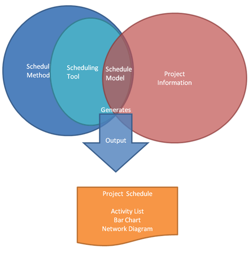
[Fig 6-2 /132]
6.1 Define Activities
-
Create WBS to Work
Package level providing basis for estimating, scheduling executing
and monitoring & controlling
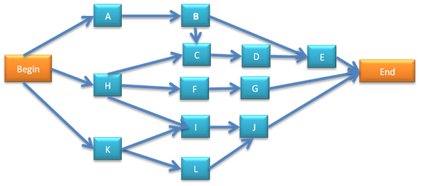
[Fig 6-3 / 133]
[Fig 6-4 / 133]
6.1.1 Define Activities –
Inputs
.1 Scope Baseline
-
Deliverables,
constraints and assumptions
.2 Enterprise
Environmental Factors
-
Project management
Information systems
.3 Organizational Process
Assets
-
Scheduling methodology
-
Lessons Learned
6.1.2 Define Activities –
Tools and Techniques
.1 Decomposition
-
WBS – work package
definition
-
Work Package must add up
to deliverable
-
Involve team members for
better results
.2 Rolling Wave Planning
-
Progressive elaboration
-
Work can exist at
various levels depending on where it is in the Project Life Cycle
.3 Templates
-
Activity list and
milestones from previous projects
.4 Expert Judgment
-
Expertise in defining
activities
6.1.3 Define Activities –
Outputs
.1 Activity List
-
Activity identifier and
scope of work for each activity
.2 Activity Attributes
-
Order
-
Resources
-
Activity relationships
-
Dates
-
Effort
.3 Milestone List
-
Significant points in a
project
6.2 Sequence Activities
-
Logical relationships
between activities
-
Use of Lead and Lag time
when required
[Fig 6-5 / 136]
[Fig 6-6 / 137]
6.2.1 Sequence Activities
– Inputs
.1 Activity List
.2 Activity Attributes
.3 Milestone List
.4 Project Scope
Statement
-
Contains product
characteristics that may influence schedule
.5 Organizational Process
Assets
6.2.2 Sequence Activities
– Tools and Techniques
.1 Precedence Diagramming
Method (PDM)
-
PDM a method used in
Critical Path Methodology for constructing Project Schedule Network
Diagram (boxes/rectangles called nodes)
-
Also called
Activity-on-Node (AON)
-
Includes four types of
relationships
-
Finish to Start (FS)
-
Finish to Finish (FF)
-
Start to Start (SS)
-
Start to Finish (SF)
Refer
to spread sheet sample
[Fig 6-7 / 139]
.2 Dependency
Determination
-
Three types of
dependencies to define sequences amongst activities
-
Mandatory Dependencies
-
Contractually required
-
Inherent in Nature of
work
-
Often have physical
limitations
-
Sometimes referred to
as Hard Logic
-
Discretionary
Dependencies
-
Determined during
sequencing activities
-
Referred to as
Preferential Logic or Sort Logic
-
Determined by
Knowledge or Best Practices
-
Desired sequence over
Acceptable sequence
-
Can create arbitrary
Float values and limit later scheduling
-
If Fast Tracking
employed should be reviewed and considered for modification or
removal
-
External Dependencies
-
Determined during
scheduling
-
Relationship between
Project and Non-project activities
-
Usually outside
Project Team control
.3 Applying Leads and
Lags
-
Used to accurately
define Logical relationships
-
Shouldn't replace
Schedule logic
-
Leads allow for
acceleration of successor activity
-
Lags direct delays for
successor activity
.4 Schedule Network
Template
-
Standardized Diagram
template can accelerate preparation of networks of project
activities
-
Portions of project
schedule network diagrams are called Sub-network or Fragment-network
– useful for nearly identical deliverables
6.2.3 Sequence Activities
– Outputs
.1 Project Schedule
Network Diagrams
-
Schematic display of
activities and logical relationships, also referred to as
Dependencies
-
Unusual sequences should
be fully described
.2 Project Document
Updates
-
Activity List
-
Activity Attributes
-
Risk Register
Find
examples of above diagrams
6.3 Estimate Activity
Resources
-
Estimating type and
quantity of materials, people, equipment and supplies required to
perform each activity
[Fig 6-8 / 142]
[Fig 6-9 / 142]
6.3.1 Estimate Activity
Resources – Input
.1 Activity List
-
Identifies activities
requiring resources
.2 Activity Attributes
-
Primary data input for
estimating, developed during activity definition and sequencing
.3 Resource Calendar
-
Resource, people and
materials, potential availability during the planned period
-
Includes resource Skills
and experience
-
May include geographic
location
-
Composite resource
calendar include availability, capabilities and skills of human
resources
.4 Enterprise
Environmental Factors
-
Can influence estimates
but not limited to resource availability and skills
.5 Organizational Process
Assets
-
Policies and procedures
regarding staffing
-
Policies and procedures
regarding rentals or purchases of supplies and equipment
-
Historical information
on resources used in past similar projects
6.3.2 Estimate Activity
Resources – Tools and Techniques
.1 Expert Judgment
-
Resource estimates and
planning expertise
.2 Alternative Analysis
-
Looking at various
skills and different sizes and types of machines or tools
.3 Published Estimating
Data
-
Published production
rates and unit costs of resources - Labor trades, Materials and
equipment can be geographically distributed
.4 Bottom Up Estimating
-
Decomposing work
activity into further details
-
Resource needs are
estimated and aggregated to total quantity
-
Activities may have
dependencies that can affect resource usage, any patterns should be
documented
.5 Project Management
Software
-
Used to plan, document
and optimize resource utilization
6.3.3 Estimate Activity
Resources – Outputs
.1 Activity Resource
Requirements
-
Identifies types and
quantities of required resources for each activity in a work package
-
Documenting basis of
estimate, assumptions, availability and quantities used
.2 Resource Breakdown
Structure
-
A hierarchical structure
of identified resources by category and type
-
Can include labor,
materials, equipment and supplies as well as skill and grade level
-
Useful for reporting
project schedule with resource utilization
.3 Project Document
Updates
-
Activity List
-
Activity Attributes
-
Resource Calendar
6.3 Estimate Activity
Durations
-
Approximating the number
of work periods needed to complete activities with estimated
resources
-
Inputs for estimate
originate form person or group on project who is most familiar with
nature of work in the specific activity
-
Duration estimates are
progressively elaborated
-
Estimate amount of work
to complete with amount of resources
-
Use of project calendar
and alternative work-period resource calendar
[Fig 6-10 / 146]
[Fig 6-11 / 147]
6.4.1 Estimate Activity
Durations – Inputs
.1 Activity List
.2 Activity Attributes
.3 Activity Resource
Requirements
-
Resource skill and
availability
.4 Resource Calendar
-
Resource type,
availability, capability of staff, equipment, materials
.5 Project Scope
Statement
-
Assumptions
-
Existing conditions
-
Availability of
information
-
Length of Reporting
period
-
Constraints
-
Available skilled
resources
-
Contract terms and
requirements
.6 Enterprise
Environmental Factors
-
Duration estimating
database and other reference data
-
Productivity metrics
-
Published commercial
information
.7 Organizational Process
Assets
-
Historical duration
information
-
Project calendars
-
Scheduling methodology
-
Lessons Learned
6.4.2 Estimate Activity
Duration – Tools and Techniques
.1 Expert Judgment
-
Guided by historical
information
-
Can combine estimating
methods and how to reconcile differences
.2 Analogous Estimating
-
Uses parameters such as
Duration, Budget, Size, Weight and Complexity from previous similar
projects adjusted for project needs variations
-
Used when information on
current project is limited
-
Less costly and time
consuming but less accurate
-
Applied to whole of
project or only segments
-
Most accurate when past
projects are similar
.3 Parametric Estimating
-
Combines historical data
and other variables
-
Duration quantitatively
determined by multiplying quantity of worked by labor hours per unit
of work
-
Produces higher level of
accuracy depending on sophistication of data
.4 Three-Point Estimates
-
PERT – Program
Evaluation and Review Technique
-
Most Likely - (Tm)
-
Optimistic - (To)
-
Pessimistic - (Tp)
-
PERT Time Estimate =( To
+ 4*Tm + Tp) / 6
.5 Reserve Analysis
-
Contingency time or
Reserve/Buffer
-
Can be allocated as
fixed number of units (ie. 50 days) or percentage
6.4.3 Estimate Activity
Duration – Outputs
.1 Activity Duration
Estimates
-
Quantitative assessment
of likely number of work periods
-
Can often be a range:
ie. 2 weeks +/- 2 days or 15% change of exceeding 3 weeks
.2 Project Document
Updates
-
Activity Attributes
-
Assumptions in duration
estimate such as skill availability
6.5 Develop Schedule
-
Process of analysis –
Activity sequences, Duration, Resource requirements and Schedule
constraints
-
Develop acceptable
Milestones
-
Approved project
schedule serves as a baseline to track progress
[Fig 6-12 / 152]
[Fig 6-13 / 153]
6.5.1 Develop Schedule –
Inputs
.1 Activity List
.2 Activity Attributes
.3 Project Schedule
Network Diagrams
.4 Activity Resource
Requirements
.5 Resource Calendar
.6 Activity Duration
Estimates
.7 Project Scope
Statement – includes assumptions & constraints
.8 Enterprise
Environmental Factors – includes Tools and Techniques
.9 Organizational Process
Assets – includes Scheduling methodology & Project calendar
6.5.2 Develop Schedule –
Tools and Techniques
.1 Schedule Network
Analysis
-
Generate project
schedule through:
-
Critical Path Method
-
Critical Chain Method
-
What-if Analysis
-
Resource Leveling
.2 Critical Path Method
-
Theoretical Early &
Late start and finish dates for a ll activities without Resource
Constraints by performing forward and backwards analysis through the
schedule network
-
Shows possible project
schedule given activity durations, logical relationship, leads &
lags and other constrains
-
Early or Last
Start/Finish dates may be affected by Activity Total Float, can be
positive, negative or zero
-
Zero total float is a
characteristic of Critical Paht hose are Critical Activities
-
Free Float – amount of
time and activity can be delayed by without delaying early start
date of immediate successor activity
.3 Critical Chain Method
-
Schedule network with
resource constraints applied
-
Resource limited
schedule – limiting Critical path to resource constraints also
called Critical Chain
-
Uses duration buffers to
manage uncertainty
-
Project buffer at end of
critical chain projects target finish date
-
Buffers protect critical
chain from slippage along feeding chains
-
Critical Chain focuses
on managing remaining buffer durations against remaining tasks,
instead of Total Float.
.4 Resource Leveling
-
Applied to a schedule
that has analyzed critical path method
-
Used when shaping
limited resources, or resource usage requires constant levels
maintained
-
Can cause original
Critical Path to change
.5 What-If Scenario
Analysis
-
Schedule Network
Analysis is used to compute different scenarios
-
Assess Feasibility of
Project Schedule under adverse conditions and helps plan
contingencies
-
Common technique is
Monte Carlo Analysis
.6 Applying Leads and
Lags
-
Applied during Network
Analysis
.7 Schedule Compression
-
Crashing
-
Adding resources,
overtime, paying to expedite activities
-
Can increase Risk and
Cost
-
Fast Tracking
-
Performing activities
in Parallel
.8 Scheduling Tool
-
Use of Software and
methodologies
6.5.3 Develop Schedule –
Outputs
.1 Project Schedule
-
Minimum planed Start-End
date for each activity
-
Can be Summary from,
master or milestone schedule or Detailed Schedule
-
Presented Graphically
(see 6-14)
-
Milestone Charts
-
Bar Charts – can use
broader more comprehensive summary activity referred to as Hammock
Activity used between milestones across multiple independent Work
Packages
-
Project Schedule Diagram
/ Gantt chart
-
Show Project Network
Logic and Critical Path
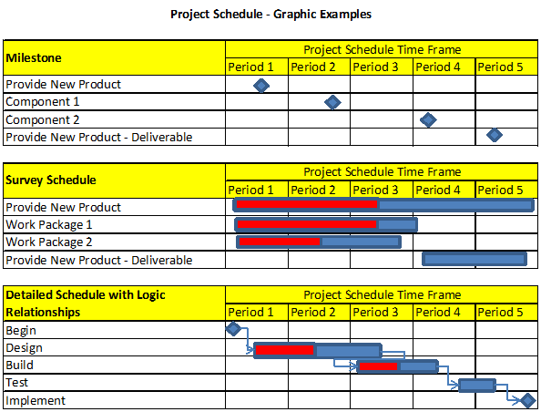
[Fig 6-14 / 158]
.2 Schedule Baseline
-
Specific version of
project schedule approved by Project Management team
.3 Schedule Data
-
Includes Milestones,
Schedule Activities, Activity Attributes, Assumptions and
Constraints
-
Assumptions and
Constraints
-
Resource requirements
by time / Resource Histogram
-
Alternative Schedules –
Best/Worst case scenarios
-
Scheduling Contingency
Reserve
-
Can include Resource
Histograms, Cash-Flow projections and Delivery schedule
.4 Project Document
Updates
-
Activity Resource
Requirements
-
Activity Attributes
-
Calendar
-
Risk Register
6.6 Control Schedule
-
Monitoring progress
against Baseline
-
Determine current status
of project schedule
-
Influencing factors that
create schedule changes
-
Determining that project
schedule has changed
-
Managing changes as they
occur
[Fig 6-15 / 160]
[Fig 6-16 / 161]
6.6.1 Control Schedule –
Inputs
.1 Project Management
Plan
-
Baseline with project
control methods
.2 Project Schedule
-
Activity status and
plans
.3 Work Performance
Information
-
Project progress –
started/completed activities
.4 Organizational Process
Assets
-
Formal and Informal
schedule control policies/guidelines
-
Schedule control tools
-
Monitoring and reporting
methods
6.6.2 Control Schedule –
Tools and Techniques
.1 Performance reviews
-
Measure project progress
-
Utilizing:
-
Earned Value Management
– EVM
-
Schedule Variance –
SV
-
Schedule Performance
Index – SPI
-
Utilizes Critical Chain
Scheduling compare amount of buffering remaining vs. required
.2 Variance Analysis
-
Assess magnitude of
variation to baseline
-
Decide if
preventative/corrective action required
.3 Project Management
Software
.4 Resource Leveling
.5 What-IF Scenario
Analysis
.6 Adjust Leads and Lags
.7 Schedule Compression
.8 Scheduling Tools
-
Manual or software
-
Assists in reporting
6.6.3 Control Schedule –
Outputs
.1 Work Performance
Measurements
-
SV & SPI for WBS
components – reported
.2 Organizational Process
Assets Updates
-
Cause of Variances
-
Corrective Action chosen
and reasons
-
Lessons Learned
.3 Change Requests
.4 Project Management
Plan Updates
-
Schedule baseline
-
Schedule management plan
-
Cost baseline
.5 Project Document
Updates
-
Schedule data
-
Schedule Network
Diagram
-
Revised Forecasts
-
Project Schedule
-
Reflects all schedule
changes
7 Project Cost Management
-
Process of estimating,
budgeting and controlling costs to complete project within approved
budget
7.1 Estimate Costs
7.2 Determine Budget
7.3 Control Cost
-
Cost estimating and
budgeting can be closely linked on smaller projects
-
Cost Management Plan can
establish:
-
Level of Accuracy
(hundreds, thousands…)
-
Unit of Measure (hours,
staff days, lump sum…)
-
Organizational
Procedures Link
-
Use of WBS with
Control Accounts
-
Control Threshold
-
Monitor variances in
costs against budget
-
Agreed upon action if
deviation beyond established boundaries (set amounts or
percentage)
-
Rules of Performance
Measurement
-
Define WBS and
Measurement of Control Accounts
-
Establish Earned Value
Technique (weighted milestones, fixed formula, % complete)
-
Reporting Formats
-
Process Descriptions
[Fig. 7-1 / 167]
-
Consider Stakeholder
requirements in capturing costs
-
Project Cost Management
primarily concerned with cost of resources and recurring and
maintenance costs
-
Can be performed outside
of project
-
Usually done early in
the Project Life Cycle
7.1 Estimate Costs
-
Approximation of
Monitory resources
-
Consideration of Cost
Alternatives
-
Cost Tradeoffs and Risks
-
Adjusted during project
for greater accuracy
[Fig. 7-2 / 169]
[Fig. 7-3 / 169]
7.1.1 Estimate Costs –
Inputs
.1 Scope Baseline
-
Scope Statement
-
Product Description
-
Assumptions and
Constraints
-
Key Deliverables
-
Project Boundaries
-
Can include direct and
indirect costs depending on project
-
WBS
-
WBS Dictionary
-
Legal/Contractual
obligations
.2 Project Schedule
-
Schedule of Resources
and required quantities
-
Activity duration
estimates
-
Resource cost per unit
of time for duration of project
.3 Human Resource Plan
-
Rates, Rewards and
Recognitions
.4 Risk Register
.5 Enterprise
Environmental Factors
-
Market conditions
-
Published Commercial
Information
.6 Organizational Process
Assets
-
Cost Estimating Policies
-
Cost Estimating
Templates
-
Historical Information
-
Lessons Learned
7.1.2 Estimate Cost –
Tools and Techniques
.1 Expert Judgment
-
With historical
information can combine methods of estimating and reconcile
differences
.2 Analogous Estimating
-
Historical information
utilized from costs of previous similar projects
-
Uses parameters such as:
Scope, Cost, Budget, Duration, Size, Weight and Complexity
-
Less costly and time
consuming but less accurate similarity of past projects determines
accuracy
.3 Parametric Estimating
-
Uses statistical
relationship and historical data and other data
.4 Bottom-Up Estimating
-
Rolling up Costs of
individual Work Packages
.5 Three Point Estimate
-
Most Likely (Cm)
-
Optimistic (Co)
-
Pessimistic (Cp)
-
PERT Cost Estimate = (Co
+ 4*Cm + Cp) / 6
.6 Reserve Analysis
-
Contingency
Reserve/Allowance
-
Adjusted as more
information becomes available
.7 Costs of Quality (COQ)
-
Assumption about Cost of
Quality may be used to estimate activity costs
.8 Project Management
Estimating Software
-
Spreadsheets
-
Simulations
-
Statistical Tools
.9 Vendor Bid Analysis
-
Using various bids from
vendors as to what the project should cost
7.1.3 Estimate Costs –
Outputs
.1 Activity Cost Estimate
-
Summary or Detailed
estimate
-
May include: Labor,
materials, equipment, services, information technology and special
categories
.2 Basis of Estimate
-
Documentation of the
basis of estimate – how it was developed
-
Documentation of all
Assumptions
-
Documentation of all
know Constraints
-
Range of Estimate - ie.
$10,000 +/- 10%
.3 Project Document
Updates
-
Risk register and other
documents
7.2 Determine Budget
-
Aggregating estimated
costs of individual work activities into an authorized baseline
budget which will be used to measure cost performance
[Fig. 7-4 / 175]
[Fig 7-5 / 175]
7.2.1 Determine Budget –
Inputs
.1 Cost Estimates
-
Aggregated work package
costs into one estimate
.2 Basis of Estimates
-
Supporting details for
cost estimates
.3 Scope Baseline
-
Scope Statement
-
Funding Constraints,
Time Constraints …
-
WBS
-
Provides relationship
amongst components and deliverables
-
WBS Dictionary
.4 Project Schedule
-
Provides information to
aggregate costs to calendar periods to which costs are planned to
occur
.5 Resource Calendar
-
Used to indicate
resource costs over duration of project
.6 Contracts
.7 Organizational Process
Assets
-
Existing cost-budget
policies, procedures and guidelines
-
Cost, budgeting tools
-
Reporting methods
7.2.2 Determine Budget –
Tools and Techniques
.1 Cost Aggregation
Aggregated Work Packages
in accordance with WBS
.2 Reserve Analysis
Contingency and
management reserves
.3 Expert Judgment
-
Other units within
performing organization
-
Consultants
-
Stakeholders, including
customers
-
Professional and
technical associations
-
Industry Groups
.4 Historical
Relationships
-
Parametric or Analogous
estimates using historical and other information to build
mathematical models to predict total project cost
-
Reliable when:
-
Historical information
is accurate
-
Parameters used are
readily quantifiable
-
Models are Scalable
.5 Funding Limit
Reconciliation
-
Variance measure in
actual cost vs budget
7.2.3 Determine Budget –
Outputs
.1 Cost Performance
Baseline
-
Cost performance
baseline is an authorized time-phased Budget at Completion (BAC)
used to measure and monitor overall cost performance
-
Budget time summation
usually displayed as S-Curve (see 7-6)
-
In the Earned Value
management technique the cost performance baseline is referred to as
Performance Measurement Baseline (PMB)
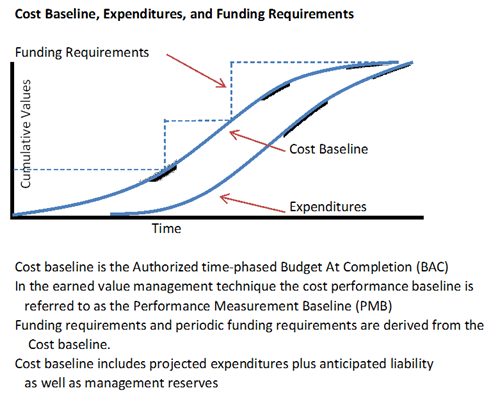
[Fig. 7-6 / 178]
.2 Project Funding
Requirements
-
Derived from cost
baseline
-
Regulate incremental
amounts allocated to project
.3 Project Document
Updates
-
Risk Register
-
Cost Estimates
-
Project Schedule
7.3 Control Costs
-
Updating project budget
and managing changes at cost baseline
-
Monitoring expenditures
against work accomplishments
-
Cost Controls include:
-
Influencing the factors
that create the changes to the authorized cost baseline
-
Ensure all change
requests acted on in timely manor
-
Managing changes as
they occur
-
Managing changes as
they occur
-
Ensuring costs don't
exceed budget by phase or total project allowance
-
Monitor cost
performance variances against cost baseline
-
Monitor work
performance against funds expended
-
Prevent unapproved
changes from inclusion into reported cost resource usage
-
Inform stakeholders of
approved changes and associated costs
-
Acting to bring cost
overruns to acceptable limits
[Fig. 7-7 / 180]
[Fig. 7-8 / 180]
7.3.1 Control Cost –
Inputs
.1 Project Management
Plan
-
Cost performance
baseline
-
Cost management plan
.2 Project Funding
Requirements
.3 Work Performance
Information
-
Work progress and costs
incurred
.4Organizational Process
Assets
-
Existing cost control
policies, procedures, guidelines
7.3.2 Control Cost –
Tools and Techniques
.1 Earned Value
Management (EVM)
-
Monitors three key
directions of each work package and control account
-
Planned Value – PV
-
Authorized budget for
work to be completed
-
Total of PV also
referred to as Performance Measurement Baseline – PMB
-
Total PV also know as
Budget at Completion – BAC
-
Earned Value – EV
-
EV is measured against
PV baseline (PMB)
-
EV cannot exceed PV
-
Used to describe
percentage of completion
-
Actual Cost – AC
-
AC measured against PV
through EV
-
AC has no upper limit,
all expenditures to achieve EV are reported
-
Variances also
monitored:
-
Schedule Variances –
SV
-
Measure of project's
schedule performance
-
SV = EV – PV
-
The EVM shows if
project progress is behind baseline
-
EVM will equal 0 at
completion because all Planed Values will be earned
-
EVM SV is best used
with Critical Path Methodology (CPM) and Risk Management
-
Cost Variance – CV
-
Measures project's
Cost performance
-
CB = EV – AC
-
Cost variance at end
of project will the difference between BAC and Actual amount spent
-
Negative EVM CV is
usually non-recoverable
-
The SV and CV values
indicate project performance and provide feedback to the project
portfolio for future estimates
-
Schedule Performance
Index – SPI
-
Progress achieved
compared to progress planned
-
If SPI value is les
then 1 indicates less work completed then planned, greater then 1
indicates more work completed then planed
-
Used in conjunction
with Critical Path to determine if project will be completed on
time
-
SPI = EV / PV
-
PV, EV and AC can be
monitored periodically and cumulatively
-
Fig 7-9 Shows project
over Budget behind Plan
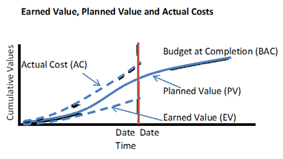
[Fig 7-9 / 183]
.2 Forecasting
-
Estimate at Completion
(EAC) may differ from Budget at Completion (BAC)
-
If BAC no longer viable
an EAC may be created
-
EAC future estimate and
prediction of funds required
-
EAC based on actual
costs on work completed plus Estimate to Complete (ETC)
-
Works with manual
forecasts of required EAC
-
Bottom-Up EAC uses
details from actual cost experience, can be disruptive and costly
because project team will require extra time to accumulate
information
-
Project Manager's
manual EAC can be compared to calculated EAC representing various
risks
-
Common EAC's used from
EVM data:
-
EAC Forecast for ETC
Work Performed at Budget Rate
-
Represents actual cost
and performance to date if unfavorable future improvement must be
supported by Risk analysis
-
EAC = AC + BAC –
EV
-
EAC forecast for ETC
work performed at Present CPI
-
Assumes experience to
date will be same in future
-
ETC performed at sample
cumulative Cost Performance Index (CPI) as incurred to date
-
EAC = BAC /
Cumulative CPI
-
EAC Forecast for ETC
work considering both SPI and CPI factors
-
Assumes work and cost
performed at same efficiency rate
-
Considers negative cost
performance and firm end date
-
Variations weigh CPI
and SPI (ie. 80/20, 50/50…) according to Project Management
judgment
-
EAC = AC + ((BAC-EV)
/ (Cumulative CPI * Cumulative SPI))
.3 To Complete
Performance Index (TCPI)
-
TCPI projection of cost
performance to completion
-
If BAC no longer viable
EAC is formed and supersedes BAC
-
TCPI base on BAC
= (BAC-EV) / (BAC-AC)
-
See fig 7-10, Work
remaining BAC-EV divided by Funds Remaining = BAC – AC or EAC –
AC
-
TCPI based on EAC
= (BAC-EV) / (EAC-AC)
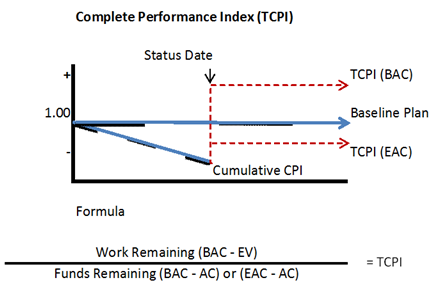
[Fig 7-10 / 186]
.4 Performance Reviews
-
Compare costs
performance over time
-
If EVM is used following
information is determined
-
Variance Analysis
-
Actual cost to Planned
cost performance
-
Cost Variance Analysis
-
Trend Analysis
-
Examine performance
over time
-
Graphical analysis
often utilized
-
Comparison of Future
goals in form of BAC vs. EAC and Completion dates
-
Earned Value Performance
-
EVM compares Baseline
to Actual schedule and cost performance
.5 Variance Analysis
-
Cost Performance
measurements CV, CPI used to asses magnitude of variation to
baseline
-
Determining cause and
degree of variation and if corrective action required
-
Acceptable percentage of
variance increases as more work accomplished
.6 Project Management
Software
-
Used to monitor 3 EVM
dimensions PV, EV, AC
-
Displays graphical
trends and possible results
7.3.3 Control Costs –
Outputs
.1 Work Performance
Measurements
-
Calculated CV, SV, CPI,
SPI for WBS components – Work Packages and Control Accounts
.2 Budget Forecasts
-
Calculated EAC value or
Bottom-Up EAC
.3 Organizational Process
Assets Updates
-
Cause of Variances
-
Corrective action chosen
and reasons
-
Lessons Learned
.4 Change Requests
-
Change Request influence
on Cost Performance Baseline
-
Preventative or
Corrective actions through Perform Integrated Change Control Process
.5 Project Management
Plan Updates
-
Cost Performance
Baseline
-
Changes as a result of
Approved Change requests
-
Cost Management Plan
.6 Project Document
Updates
-
Cost Estimates
-
Basis of Estimates
8 Project Quality Management
-
Quality Policies,
Objectives and Responsibilities to satisfy needs
8.1 Plan Quality
-
Identify quality
requirements/standards for project and product documenting how
project will demonstrate compliance
8.2 Perform Quality
Assurance
-
Auditing quality
requirements
-
Assuring quality
standards
8.3 Perform Quality
Control
-
Monitor and record
results for quality activities
-
Quality applies to
Project and Product
-
Quality
= degree to which a set of inherent characteristics fulfill
requirements
-
Grade
= category assigned to products/services having same functional use
but different technical characteristics
-
Low Quality
is always problematic but Low
Grade
may not be - Poor performance vs. Limited functionality
-
Precision vs. Accuracy
-
Precision – repeated
values clustered to have little scatter
-
Accuracy – measured
value is close to true value
-
Quality Assurance
Standards
-
ISO – International
Organization for Standards
-
TQM – Total Quality
Management
-
Six Sigma
-
FMEA – Failure Mode &
Effect Analysis
-
COQ = Cost of Quality
-
Quality Management
complements Project Management and both recognize importance of:
-
Customer Satisfaction
-
Managing expectations
-
Ensure
product/services satisfied needs
-
Prevention over
Inspection
-
Quality is planned,
designed and built-in
-
Prevention is cheaper
then correction
-
Continuous Improvements
-
Plan – Do – Check
– Act life cycle
-
Quality improvement as
defined by Shewhart
and modified by Deming
-
Initiative such as TQM
and Six Sigma
-
Process Improvement
Models
-
OPM3 –
Organizational Project Management Maturity Model
-
Malcolm Baldrige
-
CMMI – Capability
Maturity Model
-
Management
Responsibility
-
Providing resources
for success
-
COQ – Cost of Quality
-
Refers to Total cost
of all efforts related to quality
[Fig 8-1 / 191]
8.1 Plan Quality
-
Identify quality
requirements and how to achieve compliance
-
Quality is planned in
parallel with other planning
[Fig 8-2 / 192]
8.1.1 Plan Quality –
Inputs
.1 Scope Baseline
-
Scope statement
-
Meeting customer needs
regarding quality, cost and technical requirements
-
WBS – deliverables,
work packages and control accounts
-
WBS Dictionary
[Fig 8-3 /193]
.2 Stakeholder Register
-
Stakeholders'
interests and impact on quality
.3 Cost Performance
Baseline
-
Accepted time phase to
measure cost performance
.4 Schedule Baseline
-
Completion date
requirements that may affect quality
.5 Risk Register
-
List of threats that may
impact quality
.6 Enterprise
Environmental Factors
-
Government regulations
-
Rules, standards and
guidelines specific to application area
-
Work/Operating
conditions that influence Project or Product
.7 Organizational Process
Assets
-
Organization's quality
policies, procedures and guidelines
-
Historical database
-
Lessons Learned
-
Quality Policy
-
Quality standards
endorsed by executive management
-
If No clear policy
Project management team must form one and communicate to
stakeholders
8.1.2 Plan Quality –
Tools and Techniques
.1 Cost – Benefit
Analysis
-
Meeting quality
standards can include less work, higher productivity, lower cost,
increased stakeholder satisfaction
-
Compare cost of quality
to expected benefits
.2 Cost of Quality (COQ)
-
All costs incurred over
life of product by investing in preventing non conformance
-
Failure Costs
-
Internal – Found by
project
-
External – Found by
customer
-
Also termed – Poor
Quality
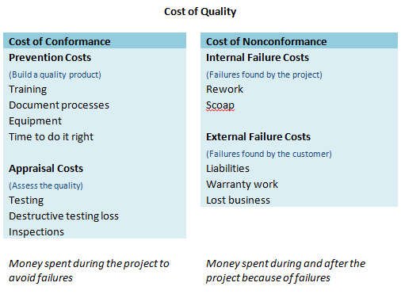
[Fig 8-4 / 196]
.3 Control Charts
-
Setting Upper and Lower
limits on quality specifications as set by Project Manager and
Stakeholders
-
Repetitive process the
control limits are generally ±3∑
-
Process is considered
out of control when data point exceeds a control limit or Seven
consecutive points above or bellow the mean
-
Charts often used to
show measured product defects compared to limits
Control Chart
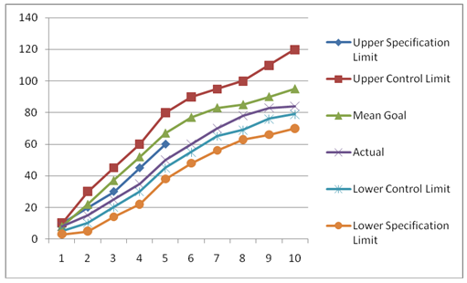
[Fig. 8-5 / 196]
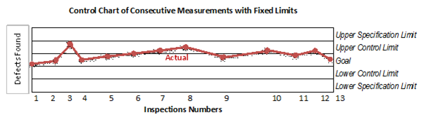
[Fig. 8-6 / 197]
.4 Benchmarking
-
Comparing actual to
planned project practices
.5 Design Of Experiments
(DOE)
-
Statistical method to
identify influencing factors
-
Used during Plan Quality
Process to determine number and type of tests
-
Can be used to optimize
products or process
-
Through statistical
analysis determine synergy amongst factors and apply systematic
changes rather than changing factors one at a time
.6 Statistical Sampling
-
Selecting a random group
of interest for inspection determined the Plan Quality Process
.7 Flowcharting
-
Graphical representation
of relationships among process steps
-
Shows activities,
decision points and order of processing
-
Can assist in
anticipating quality problems during planning
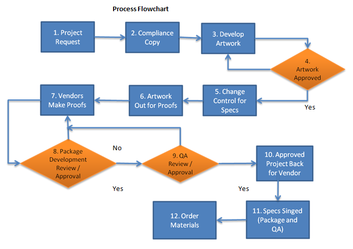
[Fig. 8-7 / 199]
.8 Proprietary Quality
Management Methodologies
-
Six Sigma
-
Lean Six Sigma
-
Quality Function
Deployment
-
CMMI
.9 Additional Quality
Planning Tools
-
Brainstorming
-
Affinity Diagrams
-
Visually identify
logical groupings based on natural relationships
-
Force Field Analysis
-
Diagrams of forces
against change
-
Nominal Group Techniques
-
Brainstorming in
smaller groups reviewed by larger groups
-
Matrix Diagrams
-
Groups of information
show relationships between factors, cause and objectives
-
Organized in Rows and
Columns with interesting cells that can be filled in with
information showing relationships among items in Rows and Columns
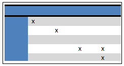
8.1.3 Plan Quality –
Outputs
.1 Quality Management
Plan
Subsidiary Project
Management Plan showing how to implement Quality control
.2 Quality Matrix
-
Describes
project/product attribute and how quality control process will
measure it
-
Defines tolerances,
allowable variations ie. +/- 10% of approved budget
-
Examples:
-
On-Time Performance
-
Budget Control
-
Defect Frequency
-
Failure Rate
-
Availability
-
Reliability
-
Test Coverage
.3 Quality Checklist
-
Verifies that required
steps are performed
-
Often component specific
-
Ensures consistency on
frequently performed tasks
.4 Process Improvement
Plan
-
Includes:
-
Process boundaries
-
Process configuration
-
Graphical description
of processes with interfaces identified
-
Process Metrics
-
With control limits
allows analysis of process efficiency
-
Targets for improved
performance
.5 Project Document
Updates
-
Stakeholder register
-
Responsibility
assignment matrix
8.2 Perform Quality
Assurance
-
Auditing quality
requirements and results from quality control
-
Quality Assurance
department often oversees Quality Assurance activities
-
Continuous Iterative
Process of improving quality of project processes, including
eliminating activities that don't add value
[Fig. 8-8 / 202]
[Fig 8-9 / 202]
8.2.1 Perform Quality
Assurance – Inputs
.1 Project Management
Plan
-
Quality Management Plan
-
Process Improvement Plan
.2 Quality Metrics
.3 Work Performance
Information
-
Technical Performance
Measures
-
Project Deliverables
Status
-
Schedule Progress
-
Costs Incurred
.4 Quality Control
Measurements
-
Analyze and evaluate
quality standards and processes
8.2.2 Perform Quality
Assurance – Tools and Techniques
.1 Plan Quality and
Perform Quality Tools and Techniques
.2 Quality Audits
-
Identify Good/Best
practices implemented
-
Identify
Gaps/Shortcomings
-
Share Good practices in
similar projects
-
Proactively offer
assistance to improve processes and productivity
-
Highlight contributions
of each audit in Lessons Learned
.3 Process Analysis
-
Follows steps as
outlined in process improvement plan
-
Examine problems,
constraints and non-value added activities
-
Root cause analysis –
technique to identify underlying problems
-
Develop preventative
actions
8.2.3 Perform Quality
Assurance – Outputs
.1 Organizational Process
Assets Updates
.2 Change Requests
-
Change requests used to
take preventative or corrective action
.3 Project Management
Plan Updates
-
Quality Management Plan
-
Schedule Management Plan
-
Cost Management Plan
.4 Project Document
Updates
-
Quality audits reports
-
Training plans
-
Process documentation
8.3 Perform Quality
Control
-
Monitoring and recording
results of quality activities and form recommendations
-
Acted on project and
product
-
Project management team
should have working knowledge of statistical quality control,
sampling and probability
-
Know the difference
between:
-
Prevention – keep
errors out
-
Attribute Sampling –
degree of conformity
-
Tolerances – range of
acceptable results
[Fig. 8-10 / 206]
[Fig. 8-11 / 207]
8.3.1 Perform Quality
Control – Inputs
,1 Program Management
Plan
.2 Quality Metrics
.3 Quality Checklists
.4 Work Performance
Measurements
-
Planned vs. Actual
-
Technical performance
-
Cost performance
-
Schedule performance
.5 Approved Change
Requests
Influencing defect repair
and revised work methods
.6 Deliverables
.7 Organizational Process
Assets
-
Quality standards and
policies
-
Standards work
guidelines
-
Issues and defects
reporting procedures and communications plan
8.3.2 Perform Quality
Control – Tools and Techniques
.1 Cause and Effect
Diagram
-
Ishikawa Diagram
-
Illustrates Possible
Problems
-
Allows to ask How and
Why
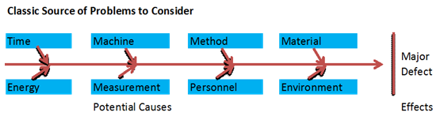
[Fig. 8-12 / 209]

[Fig. 8-13 / 209]
.2 Control Chart
-
Illustrates process over
time when subject to special cause variation resulting in
Out-of-control condition
-
Graphical displays: is
variance within acceptable limits, random fluctuations, sudden
process jumps, gradual trend in increased variation
-
Seven (7) consecutive
points outside upper or lower limit indicate process out of control
-
Upper/Lower limit
usually set at ±3∑ where 1∑ is one standard deviation
.3 Flowcharting
-
Determine failing
process steps and identify potential improvements, helps in risk
analysis
.4 Histogram
-
Shows how often problem
occurred
-
Each Column represents
attribute/characteristic of problem/situation
-
Height of each column
represents frequency of characteristic
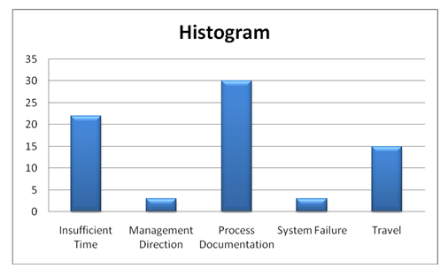
[Fig. 8-14 / 210]
.5 Pareto Chart / Diagram
-
Specific type of
histogram
-
Order by frequency of
occurrence
-
Number of defects by
type/category
-
Project team address
highest first
-
Related to Paret's Law
where small number of causes produce majority of problems 80/20 rule
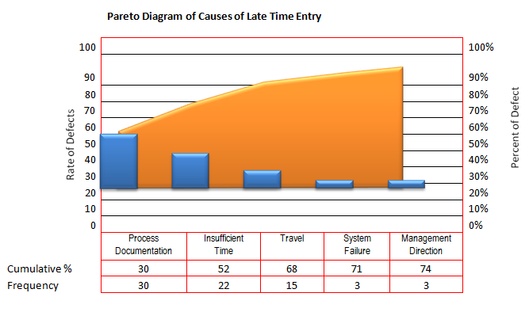
[Fig. 8-15 / 211]
.6 Run Chart
-
Similar to control chart
without limits
-
Shows history and
pattern of variation
-
Shows trends in:
-
Process over time
-
Variations over time
-
Declines/Improvements
over time
-
Involves trends analysis
through mathematical rules
-
Monitors
-
Technical performance
-
Cost and schedule
performance
.7 Scatter Diagram
-
Shows possible
relationship between 2 variables, closer points to diagonal line
indicate stronger relationship
Timecard Submission in
Days (Ideal is Zero)
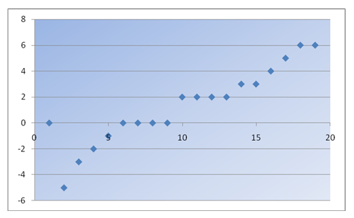
[Fig. 8-16 / 212]
.8 Statistical Sampling
.9 Inspection
-
Examination of
work/product
.10 Approved Change
Requests Review
-
Verify Change requests
implemented as approved
8.3.3 Perform Quality
Control – Outputs
.1 Quality Control
Measures
-
Documented results of
Quality Control
.2 Validated Changes
-
Changed or repaired
items inspection
.3 Validated Deliverables
-
Validate deliverables
and input results to verify scope
.4 Organizational Process
Updates
-
Completed checklist
-
Lessons Learned
.5 Change Requests
-
As implemented in
accordance with Perform Integrated Change Control Process
.6 Project Management
Plan Updates
-
Quality Management Plan
-
Process Improvement Plan
.7 Project Document
Updates
-
Such as quality
standards
9 Project Human Resource Management
-
Process to organize,
mange and lead project team
-
Comprises of people with
roles and responsibilities
-
Number of people changes
through project life cycle
9.1 Develop Human
Resource Plan
9.2 Acquire Project Team
9.3 Develop Project Team
9.4 Manage Project Team
-
Managing team includes:
-
Influencing project
team
-
Team Environment
-
Geographical Location
-
Communication amongst
Stakeholders
-
Internal/External
Policies
-
Cultural Issues
-
Organizational
Uniqueness
-
Professional end Ethical
behavior
-
Interactions that
require additional planning
-
WBS may show need for
additional team members
-
Experience level may
increase/decrease risk level
-
Durations, budget,
priorities may be subject to change according to team competency
[Fig. 9-1 / 217]
9.1 Develop Human
Resource Plan
-
Identify and document
staffing requirements
-
Skills
-
Roles and
Responsibilities
-
Time table – staff
acquisition and release
-
Training needs
-
Team build strategies
-
Recognition/rewards
programs
-
Compliance
considerations
-
Safety issues
-
Impact on Staffing
Management Plan and Organization
-
Availability or
Competition of Scarce resources
[Fig. 9-2 / 218]
[Fig. 9-3 / 218]
9.1.1 Develop Human
Resource Plan – Inputs
.1 Activity Resources
Requirements
-
Use activates to
determine human resource needed
.2 Enterprise
Environmental Factors
-
Organizational culture
and structure
-
Existing human resources
-
Personnel administrative
policies
-
Market place condition
.3 Organizational Process
Assets
-
Organizational standard
processes/policies and role description
-
Historical information –
structures from previous projects
9.1.2 Develop Human
Resource Plan – Tools and Techniques
1. Organization charts
and Position description
-
Formats to document
Roles and Responsibilities
-
Hierarchical
-
Matrix
-
Text oriented
-
Each work package must
have an owner with clear Roles and Responsibilities
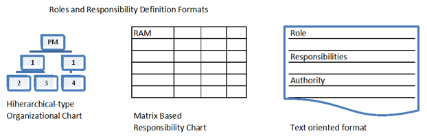
[Fig. 9-4 / 220]
-
Hierarchical-type Charts
-
WBS shows breakdown of
deliverables
-
OBS – Organizational
Breakdown Structure, shows organization's departments, units,
teams within project activities or work packages listed under each
department
-
Can be aligned with
organizational accounting system
-
Matrix Based Charts
-
RAM – Responsibility
Assignment Matrix, connection between work packages and team
members
-
RACI –
Responsibility, Accountability, Consult, Inform chart is on type of
RAM
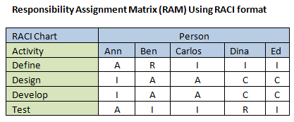
[Fig. 9-5 / 221]
-
Text Oriented Formats
-
Detailed descriptions,
usually outline responsibilities, authority, competency and
authority
-
Documents like –
Position description, Roles and Responsibilities Authority forms
-
Other Sections of the
Project Management Plan
-
Risk register lists
Risk owners
-
Communication Plan
-
Quality Assurance /
Control includes lists of members
9.1.3 Develop Human
Resource Plan – Outputs
.1 Human Resource Plan
-
How resource are to be
defined, staffed, managed, controlled and released
-
Roles and
Responsibilities Documents
-
Role
-
Describes person's
accountability, authority, responsibility boundaries
-
Authority
-
Right to make
decisions and sign approvals
-
Must be clear and
match responsibility
-
Responsibility
-
Work expected to
perform to complete project
-
Competency
-
Skills and capacity to
complete activates
-
Project Organization
Charts
-
Graphic display of team
members' reporting relationships
-
Staffing Management Plan
-
Describes how and when
Human Resources requirements will be met
-
Part of Human Resource
Plan within Project Management Plan
-
Staff Acquisition
-
Use of internal
resources or external consultants and associated costs with each
skill level
-
Amount of support
provided by Management team
-
Resource Calendars
-
Time frames for
project teams members
-
When recruiting should
start
-
One tool si a resource
histogram shows hours per work period individuals or team will be
need on project
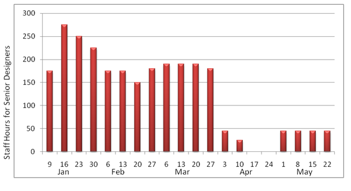
[Fig. 9-6 / 224]
-
Staff Release Plan
-
Timing of realizing
team members and associated cost
-
Smooth transitions
help morale
-
Training needs
-
Plan to provide
required skills and certifications
-
Recognition and Awards
-
Help reinforces
desired behaviors
-
Structured so
recognition is based on activities under person's control
-
Plan with time table
ensures recognition and awards not forgotten
-
Compliance
-
Strategies so staffing
management plan conforms to government regulations, union
contracts and/or human resource policies
-
Safety
-
Protecting team
members from hazards
9.2 Acquire Project Team
-
Confirm availability and
obtain team members
-
Control may be outside
of Project Management Team
-
During acquisition
consider following:
-
Project manager should
influence and negotiate with others who can provide human resources
-
Failure to acquire
necessary resources could affect schedules, budgets, customer
satisfaction, quality and risk, could lead to project cancelation
-
If human resources not
available alternative may used, such use of resources with lower
competencies providing legal or regulatory criteria are not broken
[Fig. 9-7 / 226]
[Fig. 9-8 / 226]
9.2.1 Acquire Project
Team – Inputs
.1 Project Management
Plan
-
Roles and
Responsibilities
-
Required positions,
skills and competencies
-
Project Organization
Chart
-
Staffing Management Plan
-
Time periods for
individuals
.2 Enterprise
Environmental Factors
-
Existing Human Resource
Information
-
Availability,
competency level, prior experience, interest on working on project
and rates
-
Personnel Administrative
Policies
-
When & how to
utilize internal or external resources
-
Organizational Structure
-
Location- single or
multiple
.3 Organizational Process
Assets
-
Standards policies,
processes and procedures
9.2.2 Acquire Project
Team – Tools and Techniques
.1 Pre-Assignment
-
Team members selected in
advance factoring skills and costs
.2 Negotiation
-
Negotiate with:
-
Functional managers
-
Other project
management teams
-
External organizations
.3 Acquisition
-
Use of outside resources
or subcontracting to other organizations
.4 Virtual Teams
-
Groups working on same
goal(s) with little or no physical contact, using other means of
communication
-
Virtual team enable to:
-
From teams in wide
geographic areas
-
Home office employee
use
-
Utilize employees with
different shifts/hours
-
Include people with
limitations or disabilities
-
Move forward with
project that would have been ignored due to travel expenses
-
Good communication plans
crucial to Virtual Teams
9.2.3 Acquire Project
Team – Outputs
.1 Project Staff
Assignments
-
Assigning appropriate
people
.2 Resource Calendars
-
Each person's work
time defined as well as schedule conflicts
.3 Project Management
Plan Updates
9.3 Develop Project Team
-
Improve knowledge and
skills of team members increasing ability to complete project wit
decrease cost and time
-
Improve feelings of
trust and agreement, raise morale and lower conflict
-
Create dynamic cohesive
team, razing overall productivity and team cooperation
[Fig. 9-9 / 230]
[Fig. 9-10 / 231]
9.3.1 Develop Project
Team – Inputs
.1 Project staff
assignments
-
Identify and document
people assigned to team
.2 Project Management
Plan
-
Human resource plan –
how to train/develop team
.3 Resource Calendar
-
Time of members'
participation in project
9.3.2 Develop Project
Team – Tools and Techniques
.1 Interpersonal Skills
-
Soft skills – empathy,
influence, creativity
-
Anticipating actions and
acknowledge concerns of team members
.2 Training
-
Developing team members
-
Formal training part of
human resource plan
-
Informal training result
for observation, conversation and performance appraisals
.3 Team-Building
Activities
-
Objective to have
members work together effectively
-
Through informal
meetings or special classes
-
Encourage working
together effectively
-
Constant effort due to
constant environmental changes
-
Five Stages – used in
various ways/combinations
-
Forming
-
Team meets and learns
about project and their Roles and Responsibilities
-
Referred to as Tuckman
Ladder of team development
-
Storming
-
Collaborative
discussion on project work, technical work and management approach
-
Norming
-
Adjusting habits and
behaviors to support team
-
Building trust
-
Performing
-
Team functions as well
organized unit
-
Working through issues
smoothly
-
Adjourning
-
Work completed, moving
of project
.4 Ground Rules
-
Setting expectations and
guidelines regarding behavior on project
.5 Co-Location
-
Placing all/many team
members in same location throughout project or at strategic times
.6 Recognition and
Rewards
-
Developing appropriate
team rewards
-
Only reward desirable
behavior
-
Do Not punish failure if
expectations unreasonable
-
Create rewards anyone
can achieve, do Not set limits on number of awards
-
Tangible and Intangible
awards
-
Show recognition
throughout project, Not just at end
9.3.3 Develop Project
Team – Outputs
.1 Team Performance
Assessments
-
Project management team
makes formal and informal assessment
-
Team performance should
improve with team development strategies
-
Performance assessment
criteria should be part of Develop project team inputs
-
Especially important in
contract-related or collective bargaining project
-
Team performance
successes measured in technical, time and budget success
-
Also measure job and
people related qualities as indirect measure of project
-
Team Evaluation
Factors:
-
Improvement in skill
and effective assignment performance
-
Improvement in
competencies – better team work
-
Reduce staff turnover
-
Increase team
cohesiveness – freely share information
-
Performance Evaluation
can be identify training, coaching, mentoring, assistance or changes
to improve team performance
-
All should be well
documented
.2 Enterprise
Environmental Factors Updates
-
Documentation regarding:
-
Personnel
administration
-
Employee training
records
-
Skill assessments
9.4 Manage Project Team
-
Observing and tracking
performance and behavior
-
Actions:
-
Providing feedback
-
Resolving issues
-
Manage conflicts
-
Appraisals
-
Human Resource policies
updated
[Fig. 9-11 / 236]
[Fig. 9-12 / 237]
9.4.1 Manage Project Team
– Inputs
.1 Project Staff
Assignments
-
List project team
members and work assignments
.2 Project Management
Plan
-
Human resource plan –
which includes:
-
Roles and
Responsibilities
-
Project organization
-
Staff management plan
.3 Team Performance
Assessments
-
Formal or informal
-
Continuous assessment
leads to resolving issues, modify communications, address conflict
and improve team interaction
.4 Performance Reports
-
Compares project
performance to forecasts
-
Project management -
includes schedule control cost control, quality control and scope
verification
-
Determine future human
resource requirements, recognitions and rewards, update Staffing
management plan
.5 Organizational Process
Assets
-
Certificates of
appreciation
-
Newsletters
-
Websites
-
Bonus structure
-
Corporate apparel
-
Other organizational
prerequisites
9.4.2 Manage Project Team
– Tools and Techniques
.1 Observation and
Conversation
-
Project progress,
attitudes, source of pride and interpersonal issues
.2 Project Performance
Appraisal
-
Objectives:
-
Clarification of Roles
and Responsibilities
-
Constructive feedback
-
Discovery of unknown
and Unresolved issues
-
Develop individual
training plans
-
Establish specific
future goals
.3 Conflict Management
-
Conflict Sources
-
Scare resources
-
Scheduling priorities
-
Personal work styles
-
To reduce Conflict use;
-
Team ground rules
-
Group norms
-
Solid project
management like communication planning and rule definitions
-
Initial responsibility
to resolve conflicts lies within team members then escalate to
Project manager
-
Address conflicts early,
use direct collaborative approach, escalate if necessary to
disciplinary action
-
Conflict Management
Process:
-
Conflict is natural and
forces a search for alternatives
-
Conflict is a team
issue
-
Openness helps resolve
conflict
-
Conflict resolution
focuses on issues not personalities
-
Conflict resolution
focuses on present not past
-
Factors that influence
Conflict Resolution Methods
-
Relative importance and
intensity of conflict
-
Time pressure for
resolution
-
Position taken by
players
-
Motivation to resolve
conflict on short and long term basis
-
Techniques to Resolve
Conflict
-
Withdrawing/Avoiding
-
Smoothing/Accommodating
-
Emphasis areas of
agreement not differences
-
Compromising
-
Cumming to some degree
of satisfaction
-
Forcing
-
One viewpoint at
expense of others
-
Collaborating
-
Multiple viewpoints
leading to agreement
-
Confronting/Problem
Solving
-
Open dialog to solve
problem/conflict
.4 Issue Log
-
Helps monitor who is
responsible for resolving an issue by target date
-
Addresses obstacles
.5 Interpersonal Skills
-
Technical, Human and
Conceptual skills aid Project Managers' interpersonal skills to
capitalize on team members' strengths
-
Interpersonal skills
utilize:
-
Leadership
-
Communicate vision and
inspire team
-
Influencing
-
Project manager
usually have little or no direct authority over team members, thus
influencing stakeholders on timely basis is important
-
Key Influence Skills
-
Persuasiveness,
clearly articulate points and position
-
Active and effective
listening skills
-
Consideration of
various perspectives
-
Gathering relevant and
critical information to address issues, reach agreements and
maintain trust
-
Effective Decision
Making
-
Ability to negotiate
and influence
-
Guidelines:
-
Focus on goals to be
served
-
Follow decision
making process
-
Study environment
factors
-
Develop personal
qualities of team members
-
Stimulate team
creativity
-
Manage opportunity
and risk
9.4.3 Manage Project Team
– Outputs
.1 Enterprise
Environmental Factors Updates
-
Input to Organizational
Performance Appraisals
-
Personnel skills updated
.2 Organizational Process
Assets Updates
-
Historical information,
Lessons Learned
-
Templates
-
Organizational standard
processes
.3 Change Requests
-
Staffing changes –
affect Project Management Plan, cost and budget
-
May require moving
people around, outsourcing, replacing team members
-
Cross-training can be
used to minimize impact
.4 Project Management
Plan Updates
10 Project Communication Management
-
Communication with team
members and stakeholders most time consuming part of a Project
Management task
10.1 Identify
Stakeholders
10.2 Plan Communication
10.3 Distribute
Information
10.4 Manage Stakeholder
Information
10.5 Report Performance
[Fig. 10-1 / 244]
-
Communication activity
possible dimensions:
-
Internal (within
project) and External (customer, other projects)
-
Formal (reports and
briefings) and Informal (ad-hoc discussions)
-
Vertical (up/down the
organization) and Horizontal (with peers)
-
Official (newsletters,
reports) and Unofficial (off-records communication)
-
Written and Oral
-
Verbal and Non-verbal
(body language)
-
Common Management
Communication skills
-
Listen actively and
effectively
-
Questioning – ensure
better understanding
-
Education – increase
team's knowledge and effectiveness
-
Fact-finding –
indentify/confirm information
-
Setting and Managing
expectations
-
Persuading – person
or organization to action
-
Negotiating – coming
to agreement
-
Resolving Conflict
-
Summarizing, Recapping
– identify next steps
10.1 Identify
Stakeholders
-
Identify all persons and
organizations that are influenced or exert influence by/on project
can be internal or external influences
-
Different stakeholders
have different levels of authority and influence over project
-
Manage stakeholders'
expectations, maximize positive influence and mitigate negative
impact
[Fig. 10-2 / 246]
[Fig. 10-3 / 247]
10.1.1 Identify
Stakeholders – Inputs
.1 Project Charter
-
Provide information
about internal and external parties involved and affected by project
.2 Procurement Documents
-
Procurement activity and
established contracts
.3 Enterprise
Environmental Factors
-
Organization/Company
culture and structure
-
Government and industry
standards
.4 Organizational Process
Assets
-
Stakeholder register
templates
-
Lessons Learned
-
Stakeholder registers
from previous projects
10.1.2 Identify
Stakeholders – Tools and Techniques
.1 Stakeholders Analysis
-
Identify interests,
expectations, influence and relationships of stakeholders
-
Step 1
-
Identify stakeholders
and relevant information
-
Roles
-
Departments
-
Interests
-
Knowledge level
-
Expectations
-
Influence level
-
Done by interviewing
all potential stakeholders
-
Identify stakeholders'
impact on project
-
Classify and define
approach strategy
-
Prioritize Key
stakeholders
-
Multiple classification
model available
-
Power/Interest Grid –
grouping by authority &, interest
-
Power/Influence Grid –
grouping by involvement and influence
-
Influence/Impact Gird
– group by influence and ability to affect change (impact)
-
Salience Model –
describe classes of stakeholders by Power, Urgency and Legitimacy
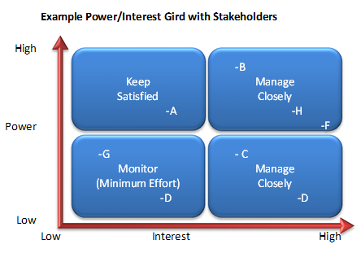
[Fig 10-4 / 249]
-
Assess how stakeholders
will react to plan and how to influence them enhancing their support
.2 Expert Judgment
-
Sought in groups of
individuals by training or knowledge on subject areas
-
Sources:
-
Senior Management
-
Other units in
organization
-
Identify key
stakeholders
-
Project managers who
worked on similar projects
-
Lessons Learned
-
Subject Matter Experts
(SMEs)
-
Industry groups and
consultants
-
Professional and
technical associations
10.1.3 Identify
Stakeholders – Outputs
1. Stakeholder Register
-
Identification
information – name, position, location, role …
-
Assessment information –
requirements, expectations, potential influence
-
Stakeholder
classification – internal/external stakeholders, their position on
project, Support, Neutral or Resistor
.2 Stakeholder Management
Strategy
-
Identify Key
stakeholders – significant impact on project
-
Level of participation –
desired from each stakeholder
-
Identify Stakeholder
groups and their management groups
-
Build stakeholder
Analysis Matrix
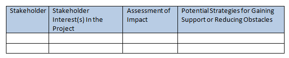
[Fig 10-5 / 251]
10.2 Plan Communications
-
Determine information
needs and define communication approach
-
Improper communication
planning lead to delays, and is sensitive to improper information
distribution
-
Should be done early and
updated regularly
[Fig. 10-6 / 252]
[Fig. 10-7 / 252]
10.2.1 Plan Communication
– Inputs
.1 Stakeholder Register
.2 Stakeholder Management
Strategy
.3 Enterprise
Environmental Factors
-
All Enterprise
Environmental Factors are used as inputs to adapt communication to
project environment
.4 Organizational Process
Assets
-
Lessons Learned
-
Historical Information
10.2.2 Plan Communication
– Tools and Techniques
.1 Communication
Requirements Analysis
-
Information needs of
project stakeholders
-
Determine value of
information
-
Consider potential
communication channels
-
Total number r of
communication channels = n * (n-1) /2 where n = stakeholder/project
team member
-
Ie. 10 stakeholders =
10 * (10-1) /2 = 45 potential communication channels
-
Inputs to determine
communication requirements
-
Organization charts
-
Project organization
and stakeholder responsibility relationships
-
Disciplines,
departments and specialties involved
-
Logistics – number of
people and location
-
Internal information
needs – communication across organization
-
External information
needs – communication with public, contractors, media…
-
Stakeholder information
– register and management strategy
.2 Communication
Technology
-
Schedule and databases
-
Oral or written
-
Influencing factors:
-
Urgency and need for
information
-
Availability of
technology
-
Expected project
staffing
-
Duration of project
-
Project environment –
face to face vs. virtual
.3 Communication Models
-
Encode – ideas made to
be understood
-
Message and Feedback
message
-
Medium – method of
communication
-
Noise – interference
with message
-
Decode – messages back
to meaningful ideas
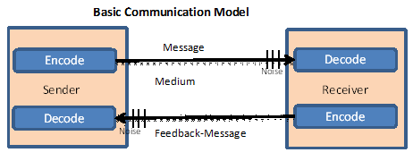
[Fig. 10-8 / 255]
10.2.3 Plan Communication
– Outputs
1. Communication
Management Plan
-
Usually provides:
-
Stakeholder
communication requirements
-
Information to be
communicated
-
Reasons for
distribution of information
-
Time frame and
frequency
-
Person responsible for
communication
-
Person responsible for
release of confidential information
-
Person/Group to receive
information
-
Methods or technology
used
-
Resources allocated for
communication activities – includes time and budget
-
Escalation process –
time frame and management chain
-
Method of updating
Project management communication plan
-
Glossary of
communication terminology
-
Flowcharts of
information flow – sequence of authorization, list of reports,
meeting plan
.2 Project Document
Updates
-
Project schedule
-
Stakeholder register
-
Stakeholder management
strategy
10.3 Distribute
Information
-
Make relevant
information available for stakeholders
-
Mainly done in Execution
process
-
Implement Communication
management plan and deal with unexpected information requests
-
Distribution
technologies:
-
Send-Receiver Models –
feedback loops and barriers to communication
-
Choice of Media –
when to use oral vs. written communication
-
Writing Style –
active vs. passive voice, grammar
-
Meeting management
techniques – prepare agendas deal with conflicts
-
Presentation techniques
-
Facilitation techniques
– build consensus, overcome obstacles
10.3.1 Distribute
Information – Inputs
.1 Project Management
Plan
-
Communication management
plan
.2 Performance Reports
-
Current project
performance and status information
-
Updated forecasts
-
Past performance that
can affect future performance
.3 Organizational Process
Assets
-
Policies, procedures and
guidelines on information distribution
-
Templates
-
Historical Information,
Lessons Learned
10.3.2 Distribute
Information - Tools and Techniques
.1 Communication Methods
-
Oral vs. written
-
Remote vs. on-site
.2 Information
Distribution Tools
-
Hard copy document
distribution
-
Electronic communication
– emails, conference tools….
-
Electronic tools for
Project management – management software
10.3.3 Distribute
Information – Outputs
.1 Organizational Process
Assets Updates
-
Stakeholder notification
-
Project reports
-
Project presentations
-
Project records
-
Feedback from
stakeholders
-
Lessons Learned
10.4 Manage Stakeholder
Expectations
-
Proactively addressing
concerns and resolving issues
-
Gain acceptance through
Negotiation and Influence towards project goals
-
Addressing concerns
before becoming issues
-
Clarifying and resolving
issues – resolutions may result in change requests, postponed or
deferred to other organizations
-
Ensure stakeholders
understand benefits and risks
[Fig. 10-11 / 262]
[Fig. 10-12 / 262]
10.4.1 Manage Stakeholder
Expectations - Inputs
.1 Stakeholder register
.2 Stakeholder Management
Strategy
-
Stakeholder goals and
objectives relevant to project
.3 Project Management
Plan
-
Communication Management
plan
-
Stakeholder requirements
and expectations
.4 Issue Log
.5 Change Log
.6 Organizational Process
Assets
-
Organization
communication requirements
-
Issue management
procedures
-
Change control
procedures
-
Historical information
10.4.2 Manage Stakeholder
Expectations - Tools and Techniques
1. Communication Methods
-
Identify all
stakeholders in communication management plan
.2 Interpersonal skills
-
Building trust
-
Resolve conflict
-
Active listening
-
Overcoming resistance to
change
.3 Management Skills
-
Presentation skills
-
Negotiating
-
Writing skills
-
Public speaking
10.4.3 Manage Stakeholder
Expectations – Outputs
.1 Organizational Process
Assets Updates
-
Causes of issues
-
Reasons for corrective
action chosen
-
Lessons Learned from
Managing stakeholder expectations
.2 Change Requests
-
Stakeholder expectations
may result in change requests
.3 Project Management
Plan Updates
-
Communication management
plan
.4 Project Document
Updates
-
Stakeholder management
strategy – ie. information needs changes
-
Stakeholder register
-
Issue Log
10. 5 Report Performance
-
Status reports
-
Progress measurement
-
Forecasts
-
Reports tailored for
different levels of audience
-
Report Examples:
-
Analysis of past
performance
-
Current status of risks
and issues
-
Work completed during
period
-
Work to be completed
-
Summery of approved
changes
-
Other information
reviewed and discussed
10.5.1 Report Performance
- Inputs
.1 Project Management
Plan
-
Measuring performance
against baseline
.2 Work Performance
information
-
Deliverable status
-
Schedule progress
-
Costs incurred
.3 Work Performance
Measurements
-
Planned vs. Actual
scheduled performance
-
Planned vs. Actual cost
performance
-
Planned vs. Actual
technical performance
.4 Budget Forecasts
-
Estimates to completions
-
Budget requirements
.5 Organizational Process
Assets
-
Report templates
-
Policies and procedures
regarding measures and indicators used
-
Organization defined
Variance limits
10.5.2 Report Performance
- Tools and Techniques
.1 Variance Analysis
-
After-the-Fact look at
variance causes
-
Common steps:
-
Verify quality of
information
-
Determine variances
-
Actual vs. Baseline,
use Earned Value Management (EVM)
.2 Forecasting Methods
-
Time series methods
-
Historical information
to estimate future performance
-
Cause/Econometric
methods
-
Identify underlying
factors and assumptions of forecasts
-
Identify patterns of
cause and effect
-
Use Linear or
Non-linear regression or Autoregressive Moving Average (ARMA) and
Econometrics
-
Judgment Methods
-
Utilize intuitive
judgment – options and probability estimates
-
Compose forecasts
-
Surveys
-
Delphi methods
-
Scenario building
-
Other methods
-
Simulation
-
Probabilistic
forecasting
-
Ensemble forecasting
.3 Communication Methods
-
Status review meetings
regarding performance
-
Project Manager uses
Push method to distribute reports
.4 Reporting Systems
-
Utilizing technology
such as software to capture, store and distribute information
-
Consolidation of
information for distribution
10.5.3 Report Performance
- Outputs
.1 Performance Reports
-
Analysis of performance
compared to baseline
-
Simple reports include:
-
Scope
-
Schedule
-
Cost
-
Quality
-
More elaborate reports
may include
-
Analysis of past
performance
-
Current status of risks
and issues
-
Work completed for work
period
-
Work to be completed
-
Changes approved for
period
-
Results of Variance
analysis
-
Forecasted project
completion – time and cost
-
Other information
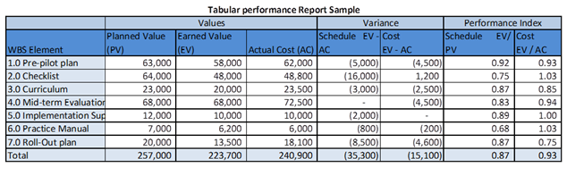
[10-15 / 271]
.2 Organizational Process
Assets Updates
-
Lessons Learned
-
Cause of issues
-
Reasons for corrective
action
-
Performance reports
.3 Change Requests
-
Recommended corrective
action
-
Recommended preventative
action
11 Project Risk Management
-
Goal – increase impact
of positive events and decrease probability of negative events
11.1 Plan Risk Management
11.2 Identify Risks
11.3 Perform Qualitative
Risk Analysis
11.4 Perform Quantitative
Risk Analysis
11.5 Plan Risk Response
11.6 Monitor and Control
risks
[Fig. 11-1 / 274]
-
Risk analyzes future
events that can affect scope, schedule, cost and quality
11.1 Plan Risk Management
-
Define how to conduct
risk management activities
-
Provide sufficient
resource and time for risk management
[Fig. 11-2 / 277]
[Fig. 11-3 / 277]
11.1.1 Plan Risk
Management – Inputs
.1 Project Scope
Management
-
Establishes importance
of risk management
.2 Cost Management Plan
-
Managing risks regarding
Risk budget, contingencies and management reserves – how to asses
and report
.3 Schedule Management
Plan
-
How schedule
contingencies to be assessed and reported
.4 Communication
Management Plan
-
How and Who will share
information on risks and respond
.4 Enterprise
Environmental Factors
-
Organization risk
tolerance and attitude
.6 Organizational Process
Assets
-
Risk categories
-
Common definitions
-
Risk statement format
-
Standard templates
-
Roles and
Responsibilities
-
Authority level for
decision making
-
Lessons Learned
-
Stakeholder register
11.1.2 Plan Risk
Management – Tools and Techniques
.1 Planning Meetings and
Analysis
-
Developing a risk
management plan
-
Assigning risk
strategies regarding time, cost and quality
-
Build matrix on
probability and impact
11.1.3 Plan Risk
Management – Outputs
1. Risk Management Plan
-
Methodology
-
Define approach, tools
and data sources
-
Roles and
Responsibilities
-
Define responsibilities
– lead, support, management
-
Budgeting
-
Assign resources
-
Estimate risk
management funds
-
Establish protocol for
contingency reserve
-
Timing
-
Scheduling risk
monitoring, application of contingency reserve
-
Risk Categories
-
Categorizing risks to
necessary details
-
Risk Breakdown
Structure (RBS)
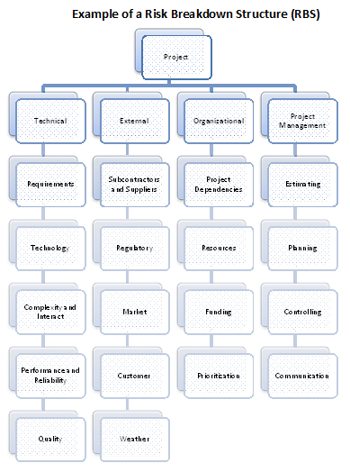
[Fig. 11-4 / 280]
-
Definitions of Risk
Probability and impact
-
Define different levels
of risk
-
Perform qualitative
risk analysis
-
Account for impact and
probability
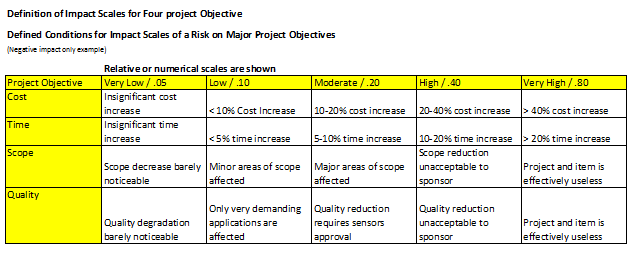
[Fig. 11-5 / 281]
-
Probability and Impact
matrix
-
Prioritize by potential
implications
-
Coordinate impact and
probability and rate High, Moderate, Low
-
Revised stakeholders'
tolerances
-
Revise in plan risk
management process
-
Reporting formats
-
Describe how Risk
management process is to be documented analyzed and communicated
-
Format of risk register
and reports
-
Tracking
-
How will risks be
recorded and audited
11. 2 Identify Risk
-
Iterative process that
includes all team members, appropriate stakeholders and outside
expertise as needed
-
Establish process and
frequency of assessment
[Fig. 11-6 / 282]
[Fig. 11-7 / 283]
11.2.1 Identify Risk –
Inputs
.1 Risk Management Plan
-
Key inputs
-
Assignment of Roles and
Responsibilities
-
Provisions of risk
management in budget and schedule
-
Risk categories
.2 Activity Cost
Estimates
-
Quantitative impact
assessment of risk and degree of impact
.3 Activity Duration
Estimates
-
Degree of impact on
overall project schedule
.4 Scope Baseline
-
Uncertainties of
assumptions are potential causes of risk
-
WBS critical input to
identify risks
.5 Stakeholder Register
-
Provides input to risk
identification process
.6 Cost Management Plan
-
Contingency funds, use
of project specific cost management, may generate or activate risks
by nature of it's structure
.7 Schedule Management
Plan
-
Risk can influence
schedule management plan
.8 Quality Management
Plan
-
Approach to quality
management can increase/decrease risks
.9 Project Documents
-
Assumption log
-
Work performance reports
-
Earned Value reports
-
Network diagrams
-
Baselines
-
Other information
regarding identifying risks
10. Enterprise
Environmental Factors
-
Published information ,
commercial databases
-
Academic studies
-
Published checklists
-
Benchmarking
-
Industry studies
-
Risk attitudes
.11 Organizational
Process Assets
-
Project files including
actual data
-
Organization and project
process control
-
Risk statement templates
-
Lessons Learned
11.2.2 Identify Risks –
Tools and Techniques
.1 Documentation Review
Improving quality of
Management Plans and ensuring consistency through Project Life Cycle
.2 Information Gathering
Techniques
-
Brainstorming
-
Groups of many or few
people generating ideas about risks using categories of risks and
Risk Breakdown structure (RBS)
-
Delphi Technique
-
Using experts to
deliver opinions anonymously, data is collected and summarized for
further inspection
-
Process repeats until
results are satisfactory
-
Anonymity minimizes
bias
-
Interviewing
-
Interviewing experts
and stakeholders
-
Root Cause Analysis
-
Discovering underlying
cause of risks
-
Develop preventative
action
.3 Checklist Analysis
-
Developed from
historical information of past projects
-
Lowest RBS can be
utilized
-
Explore items not on
checklist
.4 Assumption Analysis
-
Asses validity,
inaccuracy, instability, inconsistency and incompleteness of
assumptions
.5 Diagramming Techniques
-
Cause and Effect
Diagrams
-
Ishikawa or Fishbone
diagrams
-
Identify Cause of Risks
-
System or Process
Flowcharts
-
How elements
interrelate and mechanism of causation
-
Influence Diagrams
-
Graphical
representation of:
-
Casual influence
-
Time order of events
-
Other relationships
among variables
.6 SWOT Analysis
-
Strength, Weakness,
Opportunities and Threats
-
Often used in
Brainstorming
-
Identify organizational
strengths and weakness to identify project threats and opportunities
.7 Expert Judgment
-
Utilize experts with
previous experience
11.3 Perform Qualitative
Risk Analysis
-
Prioritizing risks by
probability of occurrence and impact
-
Document affects on
cost, time and quality
-
Establish definitions
for probability and impact to reduce bias
-
Establish priorities
[Fig. 11-8 / 289]
[Fig. 11-9 / 290]
11.3.1 Perform
Qualitative Risk Analysis –Inputs
.1 Risk Register
.2 Risk Management Plan
-
Includes budgets,
schedule, Roles and Responsibilities for risk management
-
Defines probability and
impact and creates a matrix
.3 Project Scope
Statement
-
Examine project scope
statement for potential risks
.4 Organizational Process
Assets
-
Information on prior and
similar projections
-
Study of similar
projects by risk specialists
-
Risk database from
industry or proprietary sources
11.3.2 Perform
Qualitative Risk Analysis – Tools and Techniques
.1 Risk Probability and
Impact Assessment
Utilize interviews and
meetings for assessments
Categorize and Rate risks
by probability and impact
.2 Probability and Impact
Matrix
-
Use organization's
risk rating rules to prioritize and build matrix
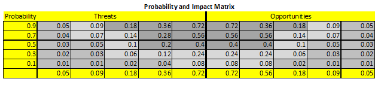
[Fig. 11-10 / 292]
-
Separate risk by
objective – time, cost, scope
-
Weighted objective
preference used for response strategy
-
Clearly identify
-
High Risks (Dark gray)
-
Medium Risks (Medium
gray)
-
Low Risks (Light gray)
-
State specific level of
action for each category
-
Immediate response
-
Future response
-
Monitor
.3 Risk Data Quality
Assessment
-
Examining degree of -
accuracy, quality, reliability and integrity of data regarding risks
.4 Risk Categorization
-
Utilizing RBS and/or WBS
to group risks by source of risk, area or phase of project or by
root cause & other…
.5 Risk Urgency
Assessment
-
Prioritizing risks
according to urgency or impact time and risk response
.6 Expert Judgment
-
Experienced individuals
from similar past projects assess probability and impact of risks
11.3.3 Perform
Qualitative Risk Analysis – Outputs
.1 Risk Register Updates
-
Relative ranking and
priority lists of project risks
-
Utilizing probability
of impact matrix to sort high, medium, and low risks
-
Prioritize lists
according to ranking
-
Risk Grouped by
Categories
-
Categorizing can reveal
root cause and lead to improved risk responses
-
Cause of Risk or Project
Areas Requiring Particular Attention
-
Discovery of Risk
concentration to improve response
-
List of Risks Requiring
Response in the Near term
-
Urgent response vs.
later response categorization
-
List of risks for
Additional analysis and response
-
Risk requiring further
analysis and response action
-
Watch List or
Low-priority risks
-
Continued monitoring of
non urgent risks
-
Trends in Qualitative
Risk Analysis Results
-
Reveling trends in
risks leading to further analysis and urgency reclassification
11.4 Perform Quantitative
Risk Analysis
-
Numerical risk analysis
-
Rating risks as a
results of qualitative risk analysis
-
To be performed and
repeated following Plan Risk Response
-
Part of Monitor and
Control process
[Fig. 11-11 / 295]
[Fig. 11-12 / 295]
11.4.1 Perform
Quantitative Risk Analysis – Inputs
.1 Risk Register
.2 Risk Management Plan
.3 Cost Management Plan
.4 Schedule Management
Plan
.5 Organizational Process
Assets
-
Information on prior
similar projects
-
Study of similar
projects by risk specialists
-
Risk database form
industry or proprietary sources
11.4.2 Perform
Quantitative Risk Analysis – Tools and Techniques
.1 Data Gathering and
Representation Techniques
-
Interviewing
-
Draw on experience and
historical data to quantify probability and impact of risks
-
Three Point Cost
Estimates
-
Range of project cost
estimates
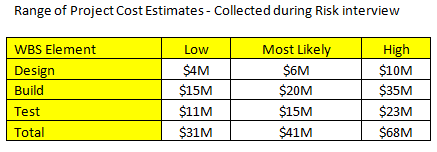
[Fig. 11-13 / 297]
-
Estimate Activity
Durations
-
Estimate Costs
-
Probability
Distributions
-
Represents uncertainty
in values – duration and cost estimates
-
Two examples widely
used of continuous distributions are show in (see fig 11-14)
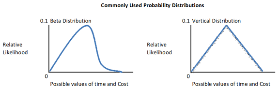
[Fig 11-14 / 298]
.2 Qualitative Risk
Analysis and Modeling Techniques
-
Sensitivity Analysis
-
Determine risks with
high impact potential
-
Measure Uncertainty
against baseline risk
-
Display sensitivity
analysis in tornado diagram – compare uncertain risks to more
stable risks
-
Expected Monetary Value
Analysis (EMV)
-
Statistical concept –
calculates average outcome when future includes scenarios that may
or may not happen
-
EMV opportunities
generate Positive value
-
EMV risks generate
Negative value
-
Multiply value of
Possible outcome by Probability of occurrence and sum up for all
possible risks
-
Often use Decision Tree
Analysis

[Fig. 11-15 / 299]
-
Modeling and Simulation
-
Translate uncertainty
into potential impact
-
Simulate using Monte
Carlo technique
-
Iterative process
-
Calculates respective
likelihood of achieving specific costs/targest through use of Cost
Risk Simulation
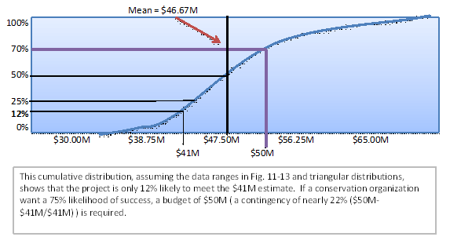
[Fig 11-16 / 300]
11.4.3 Perform
Quantitative Risk Analysis – Outputs
.1 Risk Register Updates
-
Probabilistic analysis
of the project
-
Estimate of potential
schedule/cost outcome with associated confidence level
-
Expressed as Cumulative
distribution can be used with risk contingency planning (see fig.
11-16)
-
Probability of achieving
cost and time objectives
-
Use Quantitative risk
analysis results to determine risk impact
-
Ie. Fig 11-16 the
likelihood of achieving cost estimate of $41million from fig. 11-13
is 12%
-
Prioritized List of
Quantified risks
-
Risks that have
greatest impact on project and const contingency
-
Simulation analysis
through Tornado Diagram
-
Trends in Quantitative
risk analysis results
-
Repetition of analysis
refines results of possible impact, using and building historical
information
11.5 Plan Risk Responses
-
Developing options to
enhance opportunities and reduce threats
-
Assigned Risk response
owner addresses risks in priority selecting best response form
available options
[Fig. 11-17 / 302]
[Fig. 11-18 / 303]
11.5.1 Plan Risk
Responses – Inputs
.1 Risk Register
-
List of risks, potential
responses, owners, symptoms and warnings signs with relative rating
and priority
.2 Risk Management Plan
-
Roles and
Responsibilities
-
Risk analysis
definitions
-
Timing for reviews
-
Risk thresholds
11.5.2 Plan Risk
Responses – Tools and Techniques
-
Tools like Decision Tree
Analysis can assist in response selection
-
Allocation of
contingency reserve for time and cost and identification of
conditions that trigger it's use
.1 Strategies for
Negative Risks or Threats
-
Avoid
-
Change Project
Management Plan to eliminate risk
-
Revising objectives –
ie. Extend schedule, change strategy or reduce scope
-
May lead to project
cancelation
-
Other strategies
-
Clarify information
-
Improve communication
-
Acquire expertise
-
Transfer
-
Shifting threats with
ownership of response to 3rd
parties
-
Doesn't eliminate
risk
-
Risk transference most
affective with mitigation of financial risk exposure but involves
cost of transfer
-
Mitigate
-
Reducing probability
and/or impact within threshold
-
Adopt less complex
process, conduct more tests, chose better supplier are all examples
of mitigation
-
If probability reducing
not possible address impact by targeting linkages that determine
severity ie. Redundancy systems
-
Accept
-
Passive or active
acceptance
-
Passive – document
risk and deal with risk occurrence
-
Active – increase
cost/time resource contingency
.2 Strategies for
Positive Risks or Opportunities
-
Exploit
-
Ensure opportunity is
realized by changing strategy
-
Share
-
Transfer opportunity to
3rd
party to ensure occurrence
-
Enhance
-
Increase probability of
opportunity – ie. increase resources to finish early
-
Accept
-
Take opportunity when
it occurs without extra effort
.3 Contingency Response
Strategies
-
Identify triggers for
risk and design appropriate responses
.4 Expert Judgment
-
Experienced / Skilled
persons or groups offer input for risk strategy
11.5.3 Plan Risk Response
– Outputs
.1 Risk Register Updates
-
Identified risks
-
WBS Affected
-
RBS affects on project
objectives
-
Risk owners
-
Output from Quantitative
analysis including prioritized risk list
-
Agreed upon response
strategies
-
Specific actions to
implement chosen risk strategy
-
Triggers, symptoms and
warning signs of risk occurrence
-
Budget and schedule
activities required to implement chose responses
-
Contingency plans and
triggers threat cal for their exaction
-
Fallback plans
-
Residual risks
-
Remaining risks after
planned response taken
-
Those accepted
-
Secondary risks
-
Arise from implemented
responses
-
Contingency reserves
-
Based on calculated
quantitative risk analysis and organization's risk threshold
.2 Risk-related Contract
Decisions
-
Transferred and/or
shared risks
.3 Project Management
Plan Updates
-
Schedule management plan
-
Risk response driven
-
Changes in tolerances
or behavior in resource loading and leveling
-
Updates to schedule
-
Cost management plan
-
Updates to budget and
cost contingency plan
-
Quality management plan
-
Updates to quality
assurance, quality control and requirements documents
-
Procurement management
plan
-
Changes in make or by
decisions or contracts
-
Human Resource
management plan
-
Changes in staff
allocation and resource loading
-
WBS
-
Schedule baseline
-
Cost performance
baseline
.4 Project Document
Updates
-
Assumptions log updates
-
Technical document
updates
11.6 Monitor and Control
Risks
-
Implement risk response
plan
-
Tracking identified
risks
-
Monitor residual risks
-
Identify New risks
-
Evaluate risk process
effectiveness
-
Applies techniques like
-
Variance and trends
analysis
-
Other purposes to
determine if
-
Project assumptions are
still valid
-
Analysis shows if risk
has changed or can be retired
-
Risk management
policies and procedures are followed
-
Contingency reserve of
cost and schedule require modification
-
Choosing alternative
strategies
-
Execute contingency or
fallback plan
-
Tracking corrective
action
-
Modify Project
Management Plan
[Fig. 11-19 / 308]
[Fig. 11-20 / 309]
11.6.1 Monitor and
Control Risks – Inputs
.1 Risk Register
-
Identified risks,
owners, responses, warning signs, contingency reserves
.2 Project Management
Plan
-
Risk management plan,
Thresholds, Tolerances, Owners
.3 Work Performance
Information
-
Deliverable status
-
Schedule progress
-
Costs incurred
.4 Performance Reports
-
Variance analysis
-
Earned Value data
-
Forecasting data
11.6.2 Monitor and
Control Risks – Tools and Techniques
.1 Risk Analysis
-
New or reassessed and
closed risks
.2 Risk Audits
-
Effectiveness of Risk
management plan
.3 Variance and Trends
Analysis
-
Deviation in actual
performance vs. planned
.4 Technical Performance
Measurements
-
Actual technical results
vs. planned
.5 Reserve Analysis
-
Cost/Time contingency
remaining vs. risks left
.6 Status Meetings
-
Regular evaluation of
risks and risk management plan
11.6.3 Monitor and
Control Risks – Outputs
.1 Risk Register Updates
-
Outcome of risk
reassessment, audits and reviews
-
Actual outcome or risk
and response
.2 Organizational Process
Assets Updates
-
Templates
-
Risk management plan
-
Probability and impact
matrix
-
Risk Register
-
Risk breakdown structure
-
Lessons Learned
.3 Change Requests
-
Recommended corrective
actions
-
Recommended preventative
actions
.4 Project Management
Plan Updates
-
Plan risk response
process
.5 Project Document
Updates
-
Same as those in plan
risk response process
12 Project Procurement Management
-
Process necessary to
purchase or acquire products, services or results outside project
team
-
Administrating existing
contracts
12.1
Plan Procurements
12.2
Conduct Procurements
12.3
Administer Procurements
12.4
Close Procurements
[Fig. 12-1 / 314]
-
Contract – legal
document between buyer and seller
-
Project Management
responsible to ensure all procurements meet project needs and adhere
to organization's procurement policies
-
Other terms
-
Agreement
-
Understanding
-
Subcontract
-
Purchase order
-
Policies define
procurement rules and who has the authority to sign and administer
agreements
-
Seller will typically
manage work as project in such cases as:
-
Buyer is customer and
key stakeholder
-
Seller's Project
management team is concerned with all Project management processes
not just within its knowledge area
-
Contract becomes key
input to seller's management process, spelling out major
deliverables, key milestones and cost objectives
12.1 Plan Procurements
-
Documenting project
purchasing decisions, specifying approach and identify potential
sellers
-
Identify project needs
to be met via acquisition of products, services or results
-
Considers degree of
influence required over potential sellers
-
Consideration to holders
of special licenses and permits for sake of legislation, regulation
or organization's policies
-
Can influence –
schedule, estimated activity, resources and risks
[Fig. 12-2 / 317]
[Fig. 12-3 / 318]
12.1.1 Plan Procurement –
Inputs
.1 Scope Baseline
-
Scope statement –
technical issues/constraints
-
WBS
-
WBS Dictionary
.2 Requirements document
-
Contractual and Legal
implications
.3 Team Agreement
-
Contractual agreement
between two or more entities
-
Predetermining roles and
impact
.4 Risk Register
.5 Risk-related Contract
Decisions
-
Identify each parties
responsibilities – ie. Insurance, bonding, services…..
.6 Activity Resource
Requirements
-
People, equipment or
location
.7 Project Schedule
-
Timelines and
deliverables
.8 Activity Cost
Estimates
.9 Cost Performance
Baseline
.10 Enterprise
Environmental Factors
-
Marketplace conditions
-
Products, services and
results available
-
Suppliers past
performance and reputation
-
Typical terms and
conditions for product
-
Unique Local
requirements
.11 Organizational
Process Assets
-
Procurement policies,
procedures and guidelines
-
Management systems
considered in developing procurement management plan in contract
selection
-
Established multi-tier
supplier system of pre-qualified sellers
12.1.2 Plan Procurements
– Tools and Techniques
.1 Make-or –Buy
Analysis
-
Consider if capabilities
and resource are available internally
-
Cost factors purchase
costs and support costs
.2 Expert Judgment
-
Technical, purchasing,
legal expertise
.3 Contract Types
-
Fixed Price contract
(FP)
-
Legal obligation to
meet or exceed requirements, costs and timelines
-
Firm Fixed Price
contract (FFP)
-
Most favored
-
Cost increase sellers
responsibility
-
Buyer responsible for
well defined product or service
-
Fixed Price Incentive
Fee contract (FPIF)
-
Some flexibility for
both parties
-
Incentive to achieving
agreed metrics
-
Typically based on
cost, time and technical performance
-
Usually a cost ceiling
is set
-
Fixed Price with
Economic Price Adjustments contract (FP-EPA)
-
Used in Long term
(years) contracts
-
A fixed price with
adjustments at end due to changing conditions
-
EPA must be based on
reliable financial index
-
Cost Reimbursable
contracts (CP)
-
Cost Plus Fixed Fee
contract (CPFF)
-
All costs plus fixed
fee calculated as percentage of natal estimated project cost
-
Fee paid only for
completed work and doesn't change due to seller performance
-
Fee can change if
Scope changes
-
Cost Plus Incentive Fee
contract (CPIF)
-
Cost plus Incentive
for meeting specified objective
-
If final cost is less
or greater then original estimate both parties share cost based on
predetermined formula (ie 80/20, 50/50 split)
-
Cost Plus Award Fee
contract (CPAF)
-
Cost plus Fee based on
buyer's satisfaction of certain broad objectives
-
Fee usually Not
subject to appeals
-
Time and Materials
contract (T&M)
-
Hybrid of Cost
reimbursement and Fixed price contract
-
Usually used for
purchasing expertise or support
-
Open ended and subject
to increase by buyer
-
Usually has time and
cost limits set at beginning of contract
12.1.3 Plan Procurements
– Outputs
.1
Procurement Management Plan
-
Types of contracts to
use
-
Risk management issues
-
Whether independent
estimates to be sued and if required as evaluation criteria
-
Project management team
can take unilateral action if the performing organization has a
procuring contracting or purchasing department
-
Standardized procurement
documents
-
Manage multiple
suppliers
-
Coordinating procurement
with other aspects like scheduling and performance reporting
-
Constraints and
assumptions that can effect planned procurement
-
Handling Lead time for
purchases and coordinate with project schedule developed
-
Set contract deliverable
dates and coordinate with schedule development and control process
-
Identify performance
Bonds and Insurance contract to mitigate risks
-
Provide direction to
seller on developing and maintain WBS
-
Establish forms and
format for procurement/contract statements of work
-
Identify prequalified
sellers
-
Procurement metrics to
manage contracts and evaluate sellers
.2 Procurement Statement
of Work – SOW
-
Developed form project
scope baseline
-
Related to contract only
-
SOW should tell seller
if they ca meet expectations
-
SOW can change over time
until contract signed
.3 Make or Buy Decision
-
Distinguishes services,
product or result to be purchased vs. Internal work
-
Includes requirements
for Performance Bond contracts and Insurance policies
.4 Procurement Documents
-
Bid tender or quotations
used for price driven purchases
-
Proposals used for other
considerations such as technical abilities
-
Common Terms:
-
Request for Information
- RFI
-
Invitation for Bid - IFB
-
Request for Proposal –
RFP
-
Request for Quote –
RFQ
-
Tender notice
-
Invitation for
Negotiation
-
Seller Initial Response
.5 Source Selection
Criteria
-
Usually main criteria is
Price
-
Other Criteria:
-
Understanding of need
-
Overall or Life-cycle
cost
-
Purchase price +
Operating costs
-
Technical Capability
-
Seller's technical
skills and knowledge
-
Risk
-
Risk to seller and
mitigation
-
Management approach
-
Does seller posses
management process to ensure success
-
Technical approach
-
Can seller meet
technical requirements
-
Warranty
-
Financial capacity
-
Does seller have
required financial resources
-
Production Capacity and
Interest
-
Business Size and Type
-
Meeting requirements
like: Small, Women-owned, disadvantaged small business or
established by government agency
-
Past Performance of
seller
-
References
-
Intellectual Property
rights
-
Does seller assert
Intellectual property rights on work done
-
Proprietary Rights
-
Does seller assert
Proprietary rights on work
12.2 Conduct Procurements
-
Process of obtaining
response, selecting seller and awarding contracts
-
Repeat process, develop
short list of sellers for larger projects
-
Selection options:
-
Select single seller,
use standard contract
-
Establish negotiating
sequence, Rank proposals by weighted scores
[Fig. 12-4 / 329]
[Fig. 12-5 / 329]
12.2.1 Conduct
Procurements – Inputs
.1
Project Management Plan
Procurement process
procedures
.2 Procurement Documents
.3 Source Selection
Criteria
-
Costs, technical
experience ….
.4 Qualified Seller List
.5 Seller Proposal
.6 Project Documents
-
Risk register
-
Risk related contract
decisions
.7 Make-or-Buy Decision
.8 Teaming Agreements
-
Buyer and seller roles
specified
.9 Organizational Process
Assets
-
List of qualified
sellers
-
Past experience with
seller
12.2.2 Conduct
Procurements - Tools and Techniques
.1 Bidder Conferences
-
Pre-bid meetings to
ensure clear and common understanding
.2 Proposal Evaluation
Techniques
Evaluation by weighted
criteria as defined by Procurement policies
.3 Independent Estimates
-
Prepared estimates used
as benchmark for bids
.4 Expert Judgment
-
Utilize expertise as
required
-
Ie. Contracting, Legal,
Finance, Accounting, Engineering, Design, Research, Development,
Sales, Manufacturing
.5 Advertising
.6 Internet Search
.7 Procurement
Negotiations
-
Subjects covered should
include:
-
Responsibilities,
Authority to make changes
-
Applicable terms and
governing laws
-
Technical and business
management approaches
-
Proprietary rights
-
Contract financing
-
Technical solutions
-
Overall schedule
-
Payments and price
12.2.3 Conduct
Procurement – Outputs
.1 Selected Sellers
.2 Procurement Contract
Award
-
Legally binding
agreement
-
Can be simple or complex
-
Can include following:
-
SOW or deliverables
-
Schedule baseline
-
Performance reporting
-
Period of performance
-
Roles and
Responsibilities
-
Seller's place of
performance
-
Pricing
-
Payment terms
-
Place of delivery
-
Inspection and
acceptance criteria
-
Warranty
-
Product support
-
Limitation of liability
-
Fees and remittances
-
Penalties
-
Incentives
-
Insurance and
performance bonds
-
Subordinate
subcontractor approvals
-
Change request handling
-
Termination and
Alternative Dispute Resolution (ADR)
.3 Resource Calendars
-
Availability of
contractor resources
.4 Change Requests
.5 Project Management
Plan Updates
-
Cost baseline
-
Scope baseline
-
Schedule baseline
-
Procurement management
plan
.6 Project Document
Updates
-
Requirements documents
-
Requirements
traceability documents
-
Risk Register
12.3 Administer
Procurements
-
Process of:
-
Managing procurements
relationships
-
Monitoring contract
performance
-
Make changes and
corrections as needed
-
Performed by buyer and
seller
-
Ensuring both parties
meet legal obligations
-
Can be seen as
administrative function outside of project or organization
[Fig. 12-6 / 335]
[Fig. 12-7 /336]
-
Administer procurement
applies appropriate project management processes to contractual
relationships and integration of outputs n to management of project
-
Project management
processes applied may include:
-
Direct and manage
project execution
-
Authorize sellers work
at appropriate time
-
Report performance
-
Monitor contract
scope, cost, schedule and technology performance
-
Perform quality control
-
Verify adequacy of
product
-
Perform integrated
change control
-
Changes appropriately
approved and communicated
-
Monitor and control
Risks
-
Ensure payments made
according to contract and linked to sellers progress/work
accomplished.
12.3.1 Administer
procurements – Inputs
.1 Procurement documents
-
Document administration
of procurement, contract awards and SOW
.2 Project Management
Plan
-
Describes how to manage
procurements
.3 Contracts
.4 Performance Reports
-
Seller's technical
documents as related to contract
.5 Approved Change
Requests
-
Contractual changes such
as:
-
SOW
-
Pricing
-
Product description
-
Service description
-
Results description
.6 Work Performance
Information
-
Quality standards
satisfied
-
Costs incurred and
committed
12.3.2 Administer
Procurements – Tools and Techniques
.1 Contract Change
Control System
-
Document process for
procurement modifications
-
Paperwork
-
Tracking systems
-
Dispute resolution
-
Approval levels to
authorize changes
-
Part of Integrated
Change Control system
.2 Procurement
Performance Reviews
-
Conduct audits to
measure progress on scope and quality, cost, schedule related to
contract
.3 Inspections and Audits
-
Verify compliance in
seller's work process and deliverables
.4 Performance Reporting
-
Information on seller's
achievement of contractual obligations
.5 Payment System
-
Authorized upon
completion / progress on agreed on work usually processed by
accounts payable system
.6 Claims Administration
-
Contested charges, also
called Claims, disputes or appeals if they cannot be settled within
terms of contract may be handled with Alternative Dispute Resolution
(ADR) negotiation being preferable
.7 Records Management
System
-
Managing contract
procurement documents and records consisting of specific processes,
related control functions and automation tools
12.3.3 Administer
Procurements – Outputs
.1
Procurement Documentation
-
Consists of –
procurement contract with supporting schedules, unapproved change
requests and approved change requests
-
Seller developed
technology documents and performance documents such as:
-
Deliverables
-
Performance reports
-
Warranties
-
Financial documents
-
Invoices
-
Payment Records
-
Contract related
inspections
.2 Organizational Process
Assets Updates
-
Correspondence
-
Payment schedules and
requests
-
Seller performance
evaluating documents
.3 Change Requests
-
Project Management Plan
impact – cost baseline, project schedule and procurement
management plan
-
Approved vial Integrated
change request plan
-
Include unresolved
changes and disputed changes
.4 Project Management
Plan Updates
-
Procurement management
plan
-
Reflects approved change
impact on procurement management plan, costs and schedule
-
Baseline Schedule
-
Updated if project
performance slips
12.4 Close Procurements
-
Closure of project/phase
procurement process
-
Involves verification of
work and deliverables accepted
-
Finalizing open claims
and updating records
-
Unresolved claims may be
subject to litigation after closure
-
Early termination as
specified by contract
[Fig. 12-8 / 342]
[Fig. 12-9 / 342]
12.4.1 Close Procurements
– Inputs
.1
Project Management Plan
.2 Procurement
Documentation
-
Scope, Cost, Schedule
and Quality performance
-
Contract change
documents
-
Used in Lessons Learned
12.4.2 Close Procurements
– Tools and Techniques
.1 Procurement audits
-
Identify successes and
failures
.2 Negotiated settlements
-
If negotiation not
possible use ADR – ie. Mediation or arbitration
.3 Records management
system
12.4.3 Close Procurement
– Outputs
.1 Closed procurements
-
Formal Notification of
contract completion as specified in terms and conditions, included
in Project Management Plan
.2 Organizational Process
Assets Updates
-
Procurement file
-
Complete set of indexed
contract documents
-
Deliverable acceptance
-
Formal written notice
of deliverable acceptance or rejection
-
How to address
Non-conforming deliverables
-
Lessons Learned
-
Experiences
-
Process improvement
recommendations